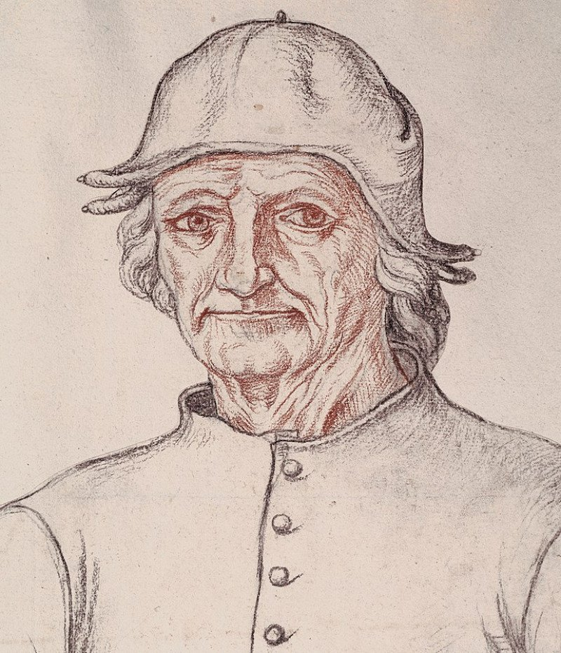
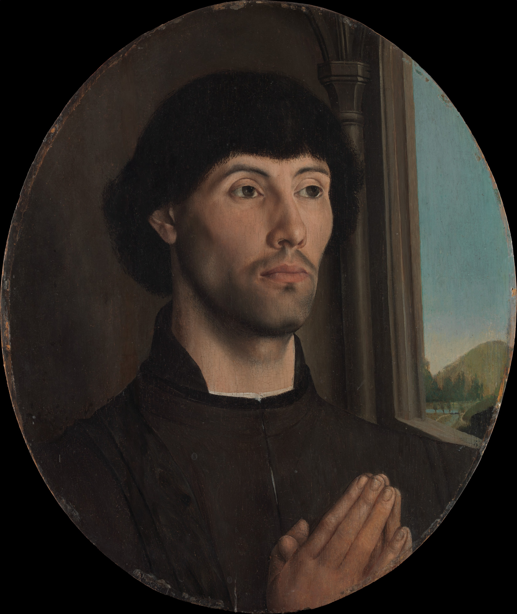
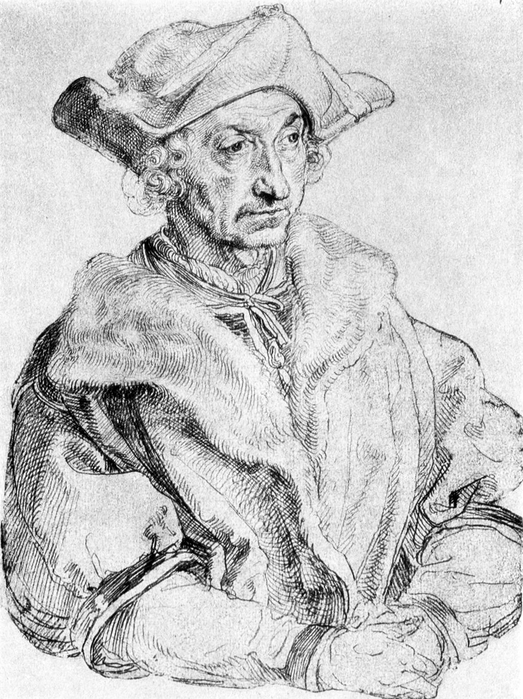
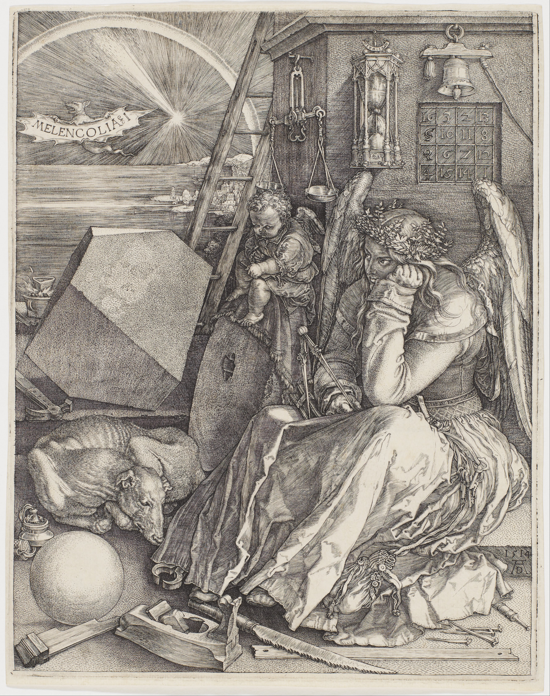
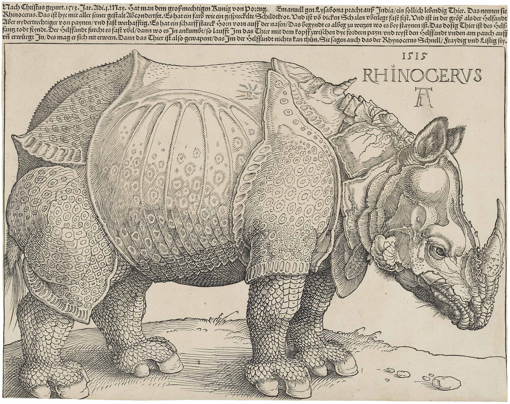
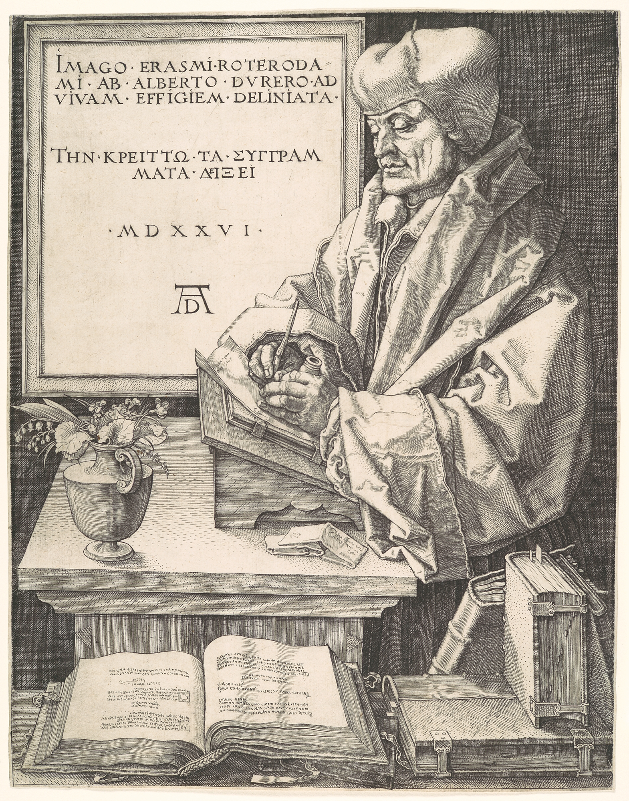
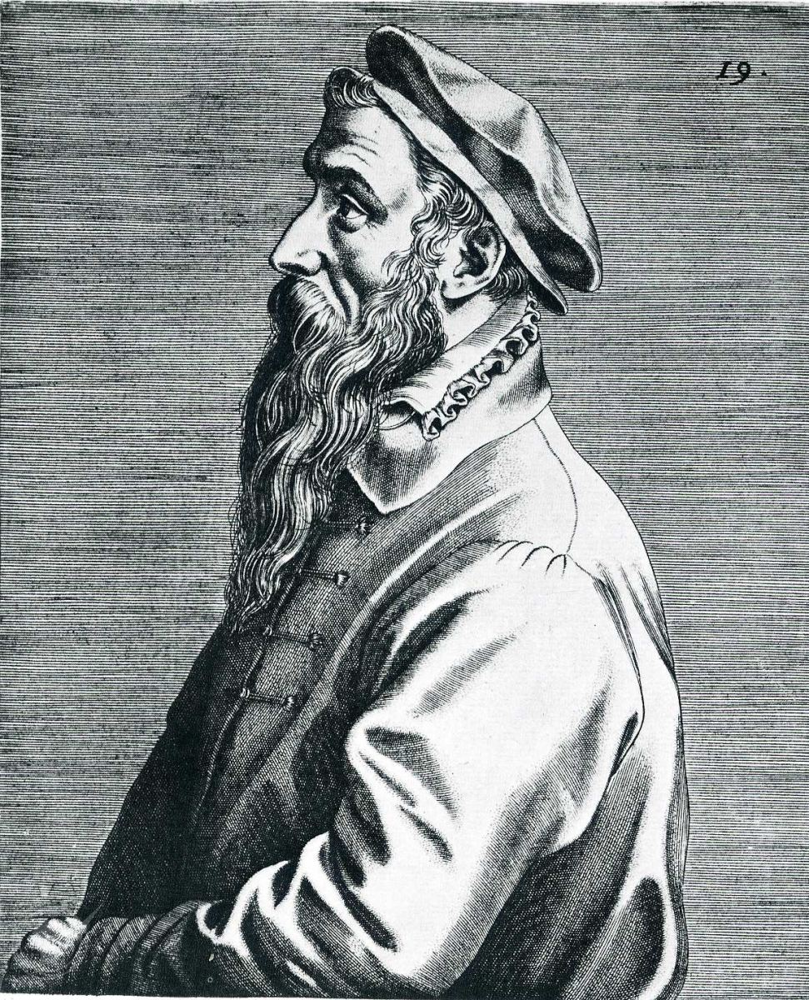
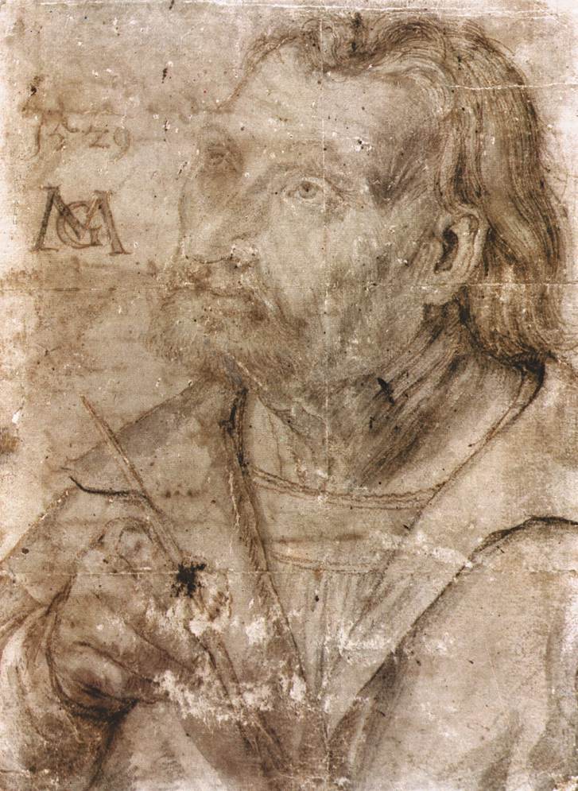

Capítulo 13
Místicos y humanistas
«La nave de los locos»
«¿Quién sería capaz de contar todos los pensamientos asombrosos, extraños y juguetones que rondaban por la cabeza de Jheronimus Bosch y que él transmitía con el pincel, todos esos fantasmas y monstruos infernales que a menudo asustaban más que deleitaban a quien los miraba?», así escribe sobre El Bosco el Vasari neerlandés, que se llamaba Karel van Mander. Y prosigue: «En su manera de drapear las figuras se apartaba mucho del estilo antiguo» —es decir, lo reconoce como maestro innovador—, «que se distinguía por una abundancia excesiva de curvas y pliegues. Su modo de pintar era audaz, hábil y hermoso. A menudo pintaba sus obras de un solo golpe de pincel, y aun así sus cuadros eran bellos, y los colores no se alteraban».
Esa manera de pintar de un solo golpe de pincel que nos presenta El Bosco, y de la que escribe Karel van Mander, se llama alla prima, sencillamente un procedimiento de lo más diestro de nuestro tiempo. «Igual que otros maestros antiguos, tenía la costumbre de dibujar con detalle sus cuadros sobre la preparación blanca de la tabla y, además, de cubrir los cuerpos con un tono ligero, dejando en algunos lugares la preparación al descubierto». Y esto se ve muy bien cuando uno se acerca a las obras de El Bosco y las examina.
Y un poeta de la época, Lampsonius, dirige a El Bosco en sus versos el siguiente mensaje: «¿Qué significa, Jheronimus Bosch, ese aspecto tuyo que expresa el horror, y esa palidez de los labios? ¿Acaso ves volar los espectros del reino subterráneo? Creo que se te abrieron el abismo del codicioso Plutón y las moradas del infierno, si pudiste pintar tan bien con tu mano lo que se oculta en las entrañas más hondas del averno».
Hay que comentar tanto lo que escribió Karel van Mander como lo que escribió el poeta contemporáneo de El Bosco. Lo percibían, desde luego, como un artista asombrosamente diestro y a la vez aterrador, que les representa el averno, les representa el infierno, cuya cabeza está llena de visiones terribles que transmite con tanta destreza.
Y, por cierto, el poeta le pregunta a El Bosco: ¿qué significan tus labios pálidos, tus ojos llenos de horror? ¿A qué se refiere? Probablemente a alguna representación de Jheronimus van Bosch, a su retrato. ¿Y dónde pudo ver los labios pálidos y los ojos que expresan horror? En Madrid, en el Museo del Prado, está su obra El jardín de las delicias. Es probable que el autorretrato de El Bosco podamos verlo en la tabla llamada El Infierno. Hay allí un ser sobre unas piernas extrañas, que recuerdan un árbol carcomido, apoyadas en una barca decrépita, y en la cabeza de ese ser zoomorfo espantoso, compuesto de árboles, animales y alguna otra cosa, un sombrero sobre el que bailan en una ronda terrible todas las almas del averno, y entre todo ello, un rostro. Ese es el autorretrato de El Bosco. Lo que escribe de él el poeta coincide mucho con lo que vemos en su autorretrato. Pero El Bosco, tanto para Van Mander como para nosotros hoy, es una figura no del todo comprendida, no del todo desvelada. Sus contemporáneos no le daban tanta importancia como a otros artistas. Y la posteridad, tampoco.

Es un representante del llamado «Renacimiento neerlandés». Nació en un lugar que se llamaba y se sigue llamando 's-Hertogenbosch, en 1450, allí mismo murió en 1516 y fue enterrado en la iglesia del Espíritu Santo. Aunque Van Mander escribe que no se conocen sus fechas de nacimiento y muerte, hoy las conocemos. Parecería que ni siquiera salió del lugar en que vivía. Y, sin embargo, este hombre estuvo ya en vida muy ampliamente ligado al mundo que lo rodeaba y, con toda probabilidad, ocupó en ese mundo un lugar completamente distinto del que imaginamos. Estamos todo el tiempo cambiando, por así decirlo, la óptica con que miramos a este artista. Cuanto más lo comprendemos, más cambia todo ante nuestros ojos. Parecería: ¿qué tiene de particular, qué es lo que cambia a medida que se comprende? Lo dibujado, dibujado está; lo pintado, pintado está.
Tomemos un cuadro sencillo de contar: La nave de los locos. Es un cuadro muy pequeño; pertenece al Louvre. De todos los cuadros de El Bosco es el más sencillo y cómodo de contar, porque es pequeño y tiene un asunto bastante simple. Pero hay noticias de que es la parte central de un tríptico. Y ese tríptico constaba además de una tabla llamada La gula y otra llamada La lujuria, porque en La nave de los locos se trata de lo uno y de lo otro. O, más bien, no tanto de la gula como del alcoholismo y la lujuria. En resumen, La nave de los locos fue en otro tiempo parte de un tríptico. Hoy vemos en el Louvre este solo cuadro, del que vamos a hablar.
Repitamos una vez más que El Bosco es un artista particular, pese a la tradición. La Holanda del norte, o provincia de Brabante, en el momento de su nacimiento, en 1450, formaba parte del ducado de Borgoña, y solo tras acontecimientos posteriores entró a formar parte de los Estados de Holanda. Pero El Bosco nació en 1450, y en realidad se llamaba Joen Anthoniszoon van Aken. Por qué pasó a llamarse Jheronimus Bosch se desconoce. Quizá Jerónimo es su patrono de bautismo. Bosch, quizá porque el lugar donde nació se llamaba 's-Hertogenbosch y él tomó la última sílaba del lugar: Bosch. Quizá sea así, pero Joen van Aken procedía de un lugar llamado Aquisgrán, que fue la capital de Carlomagno. En todo caso, donde vivió nuestro héroe allí fue enterrado. Era un burgués acomodado de su ciudad. Estaba casado con una viuda rica y no tenía reproches por parte de la sociedad. Y, sin embargo, no hay nada más individual, más extravagante, que sus cuadros.
A decir verdad, el asunto de estos cuadros no hay ni que contarlo. Pero sus cuadros tienen una cantidad enorme de sentidos. Por ejemplo, todos afirman unánimemente que, además del asunto visible, que siempre da título al cuadro (La nave de los locos, El jardín de las delicias o La huida a Egipto), hay una cantidad enorme de sentidos. Pero volvamos al objeto de nuestra charla: La nave de los locos. Parecería, en efecto, que no hay nada más sencillo que este asunto. Una compañía muy achispada canta a coro, bebe. La nave ya ha echado raíces, no navega a ninguna parte, de ella crece un árbol, y un mozo, armado con un cuchillo, trepa por él, porque en lo alto de lo que sería el mástil hay un cochinillo asado bien atado. Nada más fácil que coger ahora ese cochinillo y comérselo: ya está listo, ya está asado. Y el mozo sencillamente trepa con el cuchillo. Pero alcemos la vista y veremos que sobre él ondea una bandera rosa. Y en esa bandera está pintada la luna en su primer cuarto de aparición o, quizá, de desaparición. Y más arriba, la copa, la copa de ese árbol. Y aquí, bajo el árbol, dentro de su copa, vemos una calavera, y es la calavera de Adam Kadmon.
Hay otro detalle admirable en este cuadro pequeño. Miremos la parte inferior, donde está representada esa admirable compañía achispada. ¿Qué no se entiende aquí? Parece que se entiende todo, y no hay nada que entender. Pero vemos que a la derecha, completamente aparte, está sentado un miembro de la compañía; está como con ellos, pero completamente separado de ellos. Está sentado un bufón triste, con traje de bufón, con la máscara de bufón en una mano y un vaso en la otra. Una escena cómica; es del todo evidente que el autor ridiculiza las costumbres disolutas. Ahí, del árbol cuelga además un trozo de bollo o de pan, que se balancea en una cuerda, y la gente quiere morderlo por ambos lados, también muy cómico. Y las caras de todos son cómicas. No son personas; son personajes de un espectáculo de feria, de una diversión de barraca. Todos tienen la misma cara. Parecen tallados a cuchillo, todos, todos sus personajes son iguales. Da la impresión de que salen de una cadena de montaje. Señores y señoras que es muy difícil distinguir entre sí, salvo por la ropa. Son hombrecillos de madera tallados, productos semielaborados de personas. Solo tienen rasgos de personas: cabeza, manos, ojos, rasgos antropológicos humanos. Pero ninguna iluminación, ningún resquicio de luz, ninguna inspiración, ningún intelecto. Nada de lo que los pintores neerlandeses pintaban tan admirablemente. Por no hablar ya de Jan van Eyck, sino de artistas como Hugo van der Goes, cuyo Tríptico Portinari cuelga en la sala junto a La Primavera de Botticelli. Por no hablar ya de Rogier van der Weyden, de Dirk Bouts, genios del siglo XV.

Como ya dijimos, El Bosco nació en 1450, y esta fecha tenemos que recordarla, porque 1450 es un año muy importante: la fecha del nacimiento de la imprenta. Se dice que Johannes Gutenberg puso en marcha su prensa en 1450. Las fechas oscilan un poco, pero no tiene importancia. Y para nosotros es la fecha en que nació en 's-Hertogenbosch Joen van Aken.
Volviendo al cuadro La nave de los locos: esta escena alegre, en la literatura sobre El Bosco, en cualquier literatura que estudie el lenguaje artístico simbólico de los Países Bajos, se llama popular, folclórica. Existe la opinión de que apela a los proverbios y refranes folclóricos, a la experiencia folclórica, es decir, popular, a las matrioskas, a cierta despersonalización, a la masa humana, y no a la personalidad, no a la individualidad, como los italianos. Muy a menudo se hace la pregunta: ¿por qué, con toda su genialidad, Europa sigue a Italia y no a los Países Bajos, cuando estos tienen a Brueghel, tienen artistas tan admirables? ¿Por qué Europa sigue a Italia? Porque Italia es el país del humanismo, Italia creó una gran arquitectura, Italia creó la gran música moderna, Italia creó una nueva teoría del humanismo. Porque Italia apelaba a la personalidad del hombre, a lo singular, al hombre activo, al hombre espiritual y creador. El Bosco no apela a la nación, al pueblo folclórico, como se explica muy a menudo, sino a la masa humana despersonalizada.
De eso se trata. Descubrió un héroe completamente nuevo, suyo. Como escribió un poeta infantil: «Todos se parecen entre sí, todos con la cola de lado». Eso sí, es folclore, porque es, por así decirlo, el pueblo. Pero, al mismo tiempo, no es el pueblo: es la masa humana que vive de instintos, que vive una especie de vida primaria. En esto hay que detenerse. Independientemente del cuadro que pinte El Bosco —La nave de los locos, La visión de san Jerónimo, La huida a Egipto, El jardín de las delicias o El carro de heno…—. O incluso lo que el autor tuvo ocasión de ver en Venecia, en el Palacio Ducal, su asombroso cuadro, esa «visión», ese túnel con luz al final, en perspectiva, donde hay dos figuras en oración… Y aun así, también allí están de rodillas los mismos dos hombrecillos de madera. Él y ella, Adán y Eva, o ustedes y yo. Tenía un héroe particular. Y tenía una atmósfera y una dramaturgia de la acción completamente particulares. Además, en El Bosco, como en Brueghel, hay cierto contraste. Miren todos sus cuadros y verán que muy a menudo (por ejemplo, en el cuadro La extracción de la piedra de la locura) hay un contraste entre una naturaleza extraordinariamente bella, serena y hermosa, como en El hijo pródigo, y la vida, nuestros actos: un contraste entre la creación de Dios y la criatura creada por él.
Por extraño que parezca, es muy difícil nombrar a un artista que resuene más en nosotros que El Bosco. ¿En qué resuena en nosotros? ¿Dónde está ese resonador, de qué se trata? Cuando miran el cuadro La nave de los locos, pueden contarlo. Contarlo por orden. Ahí hay una sustancia que llamamos agua. Ahí una nave. Ahí unas personas que navegan. ¿Y en qué están ocupadas todas esas personas? Solo en divertirse. Beben y se divierten, se agarran unos a otros por todas partes. Otra vez esas diversiones cuarteleras sin pretensiones. Todos se procuran algo de comer, sobre todo cuando la comida ya está servida y basta con trepar al mástil. El Bosco discute, por así decirlo, el tema de esas necesidades masivas, de esas necesidades rastreras. De nuestros pecados, dicho en lenguaje elevado. Pero lo interesante es que, cuando miran sus cuadros, notan que están de verdad pintados con maestría. Y con razón escribían sus contemporáneos que podía pintar de un golpe, alla prima. Si se amplía infinitamente, uno se queda asombrado. Piensa: interesante, ¿quién pintó esto? ¿En qué época? Con semejante soltura de pincel, en efecto, no pintaba nadie. Tan sencillo, que hasta transparenta el lienzo sin preparar. ¡Y miren qué bodegones pinta! En la misma Nave de los locos: esas bayas rojas en un platito, qué bonito, qué jugoso, qué bien pintado está todo. Pero el verdadero sentido, en efecto, se nos escapa. A través de esta fábula sencilla podemos enlazar lo que ocurre. Entendemos el sentido de lo que nos propone. Y para eso no hace falta gran sabiduría. Pero entendemos muy bien, cuando miramos La nave de los locos y sus otros cuadros, que tras ese primer sentido se alzan ante nosotros otros sentidos. El Bosco se presenta como narrador. Siempre tiene figurillas tan pequeñas, tantas, en entrelazamientos dramatúrgicos tan complejos entre sí, tan fantásticos, extraños, insólitos, que uno entra sin querer en el camino de contárselo a sí mismo. Es un relator. Es un narrador. Es un descriptor. Solo que la historia que nos cuenta y nos refiere hasta el último detalle no es, examinada de cerca, del todo la que uno se figura al principio.
Si hubiera sido ese folclorista ingenuo o, por así decirlo, censor de costumbres despreocupadas y lascivas, este artista habría sido olvidado hace mucho. Pero tras todos sus cuadros, sus textos (porque son cuadros-texto, y esos maniquíes de madera, vestidos de un modo u otro, son como letras de un texto), hay un gran libro manuscrito artístico. Cuadros-libro. Cuadros-texto. Le gustan mucho los trípticos o dípticos plegables, habituales en la escuela del norte. Los italianos aman el fresco. Aman la pintura de caballete; tienen muros. Pero en el gótico del norte no hay muros; allí la pintura adquiere otra forma, la forma de las miniaturas. Y estos trípticos son muy habituales en las iglesias. En el fondo, El Bosco pinta obras de iglesia. Y cuando entramos en este camino, comprendemos que esas figuras son letras de un texto, que esos relatos son textos, y que en esos textos hay un sentido muy profundo. Ese sentido está detrás de la simple apariencia folclórica. Este pueblo no es el pueblo, sino, digamos, los hombres universales. No es el pueblo en el sentido de «habitantes de Brabante». Son los hombres universales, lo propio de los hombres universales: antes, durante y después. ¿Qué es, entonces?
Sobre El Bosco tenemos noticias muy interesantes. Sabemos que El Bosco no era simplemente un hombre, un habitante de Brabante. Él mismo lo sabía entonces, y sus contemporáneos, probablemente, también lo sabían. En primer lugar, pertenecía —y hoy es absolutamente indudable— a cierta comunidad espiritual: la Hermandad del Libre Espíritu Santo. Está enterrado en la iglesia del Espíritu Santo; esa iglesia, al parecer, pertenecía a esa hermandad. A menudo se dice que pertenecía a los llamados adamitas. Pero, comparando lo que se sabe de él y lo que se sabe de los adamitas (que eran husitas, taboritas, bogomilos), se llega a la conclusión de que no es exactamente lo mismo. Pertenecía precisamente a esa hermandad del Espíritu Santo. No debemos olvidar lo que sucedía en la vida espiritual de aquel tiempo, qué compleja y qué sangrienta era. Era la época del comienzo del protestantismo, del luteranismo, la época de Martín Lutero. Era la época del fortalecimiento del catolicismo, de la reacción católica. Una cantidad enorme de intelectuales, o de grandes artistas, de grandes maestros, no estaban ni con unos ni con otros, sino completamente aislados. El Bosco nació en 1450 y murió en 1516. ¿De quién fue contemporáneo directo? De Durero, de Miguel Ángel, de Leonardo… incluso de Botticelli, porque Botticelli murió en 1510. El Bosco murió en 1516, y Rafael en 1520. Estas personas vivieron al mismo tiempo. Tenían las mismas preocupaciones. Se les planteaban los mismos problemas de elección espiritual; simplemente siguieron caminos distintos. Escogieron cosas distintas. Pero nunca fueron solo artistas. Los artistas del Renacimiento nunca fueron solo artistas. Eran filósofos; estaban cargados de los problemas principales y fundamentales de su tiempo. Pues bien, El Bosco titula su cuadro La nave de los locos. ¿Inventó él mismo ese título, La nave de los locos? Por cierto, en la terminología de la época, nave se llama a la iglesia, el templo, la basílica, la iglesia católica. En el lenguaje profesional, teológico, es una nave. Porque la gobierna, en el valle de lágrimas y el reino del mal, aquel a quien debemos seguir. Es decir, nosotros somos los creyentes en esta nave. Pero, más exactamente aún, se llama nave una de las partes del interior de la iglesia, del interior del templo, donde se sientan los fieles. El travesaño de la cruz católica se llama transepto, o parte media, sobre la que se alza la aguja o la cúpula. La parte final se llama altar. El altar es un lugar cercado donde reposa el espíritu santo. Y el transepto es un lugar muy importante. El transepto es tierra de nadie, el lugar donde nos encontramos con el espíritu trascendental, el lugar de la unión mística del hombre con Dios. El lugar donde nos sentamos se llama nave. En poesía la palabra «nave» también tiene un sentido determinado. En Esenin: «cuando aquella bodega era una taberna rusa». Y en Lérmontov hay una nave, y en Pushkin hay una nave, y a Stalin lo llamábamos «nuestro piloto y timonel», sustituyendo a Dios por su nombre. Es una alegoría transversal, una metáfora del espacio cultural universal. Pero en aquellos tiempos, a mediados del siglo XV, la nave simbolizaba un lugar sacro, sagrado, que debía ser dirigido por Dios. Y ni siquiera por Dios, sino por el creador que hizo el mundo.
¡Ahí está el sentido de La nave de los locos: la nave está parada! Se acabó: la nave ya no se mueve a ninguna parte. La historia se ha detenido. La nave está parada, ha echado raíces. Y miren quién hay en la nave: monjas, religiosas, seglares, todos amontonados. Ni siquiera escuchan esa voz. En el valle de lágrimas y el reino del mal les importa poco. Son gente, humanos. Se divierten y cantan. Nada les preocupa, y no saben que la nave se ha detenido. Son locos. ¿Y por qué son locos? Son locos por una sola razón: son a la vez astutos y espabilados. Miren el cuadro: han dejado de oír cualquier otra cosa; solo les interesa quemar la vida. Solo les interesa el nivel más rastrero. Recordemos a Durero, que representa todos los niveles del conocimiento. Y este no es un nivel del conocimiento: aquí no hay ningún nivel en absoluto. Durero, en su Melancolía, ni siquiera tiene en cuenta este nivel. Y este nivel, por cierto, es el que investiga El Bosco. «Aquella bodega era una taberna rusa»: baja a la bodega. No al infierno, sino a la bodega… aunque quizá sí al infierno. Esenin dice: «Aquella bodega era una taberna rusa. Y yo me incliné sobre el vaso para, sin sufrir por nadie, perderme en la embriaguez» : es la desesperación, el camino a ninguna parte. ¿Creó El Bosco por sí solo esta concepción? ¿O hay algo detrás de él?
Recordemos que pertenecía a cierta comunidad, y esas comunidades han existido siempre en el mundo. Son opositoras y no lo son. Se unen según algún principio común, según sus opiniones. No es un partido, no es una pandilla. Son personas que buscan respuesta a algo. Hay una datación: el comienzo del desarrollo de este movimiento se remonta al siglo XII. No son exactamente los adamitas, pero no entremos en detalles. El año en que nació El Bosco, esta sociedad del libre espíritu lo consideraba el comienzo del apocalipsis, porque se había inventado la imprenta. Y con esto El Bosco es muy severo y estricto. Si miran el cuadro La extracción de la piedra de la locura, verán que hay una monja con un libro en la cabeza. Ahora, después de Lutero, cada cual puede escribir lo que quiera. No se crean obras verdaderas: sencillamente, quien quiere escribe lo que quiere, y se produce una especie de embrutecimiento. Y por eso la gente no lleva los libros dentro: no se los tragan, disolviéndolos en sí, como Juan el Teólogo se tragó el libro que le tendió el Señor. Lo llevan solo en la cabeza. Nosotros llevamos el libro en la cabeza. No lo tomamos dentro. Es la falsa sabiduría: empieza la época de la falsa sabiduría. Y la sociedad del Espíritu Santo definió tres principios del apocalipsis, el comienzo del movimiento hacia el final, el comienzo del movimiento hacia el fin.
La irreversibilidad de la historia de la bestia: se abren las fauces de la gehena. Los vicios humanos dominan al hombre: ¿por qué? El nivel primario en todo. Y El Bosco define tres causas de la perdición. Tres causas del apocalipsis, que representa en todos sus cuadros. Y todos sus cuadros giran en torno a esto. La vida es una nave de locos, un galimatías, del que cada cual se afana por arrancar su pajita. ¿Cuáles son los temas principales de El Bosco? La nave de los locos fija con exactitud dos de ellos, y todos los demás cuadros también se descomponen en estos temas. Es, ante todo, lo que llamamos el carácter alucinatorio de la conciencia: las personas se hallan en un estado de alucinación absoluta, es decir, tienen la razón desconectada. El alcoholismo, la embriaguez, privan al hombre de una orientación precisa. Para El Bosco, el consumo excesivo de vino no significa el concepto directo de consumo de vino. Para él, el carácter alucinatorio de la conciencia es la embriaguez mental, la incapacidad de razonar. Para él, la bebida es signo de alucinaciones. Los humanos no comprenden la realidad. No se orientan en lo real. No se orientan ni en el pasado, ni en el futuro, ni en su presente. Viven alucinados. Y este carácter alucinatorio de la conciencia se desarrollará mucho en el hombre. Y, en general, Dios creó, pero nosotros no nos hemos creado. Porque para crearse hacen falta esfuerzos, esfuerzos muy grandes. En El Bosco hay muchísimas quimeras: quimera de hombre e insecto, quimera de hombre y animal y otras semejantes, porque las personas no han terminado de encarnarse. Somos una humanidad a medio encarnar; hay que hacer esfuerzos para abrirse paso, para vencerse, para superarse. Él no enseña a nadie: analiza, muestra. En La nave de los locos, la nave se ha parado. ¿Por qué? ¿Y adónde va a ir con pasajeros tan alucinados? Estamos bien sentados en la nave, bebemos bien… bien sentados, picando algo, cantando. Y lo más admirable: cantamos a coro. Fíjense con qué abandono cantan. Beben y cantan a coro. En este cuadro, como en otros cuadros de El Bosco, asombra la escala, esa amargura, esa tragedia del artista. ¡Cómo cantan a coro! ¿Qué puede recordar ese canto a coro? Corazón de perro de Bulgákov, donde Shvonder y todo el comité de vivienda cantaban a coro. Pues todos ellos estaban a ese nivel. Por paradójico y extraño que parezca, el mundo de Bulgákov, el mundo de los Shárikov: ese es el nivel de El Bosco. Su persecución de los gatos y su manera de cantar. No solo cantan a coro en Corazón de perro. En El maestro y Margarita cantan a coro de maravilla, cuando hubo que llevárselos a todos y cantaban «El sagrado Baikal». En la pausa del almuerzo cantan a coro, porque no hay otra cosa que hacer. Y aquí, al parecer, cantan a coro, y eso los une. No hay otros modos de unirse que al calor de una copa o cantando a coro. Ahí tienen La nave de los locos. Han abandonado la nave, porque cantan a coro y trasiegan vodka. Y además trepan tras el cochinillo asado. Está muy bien tener un cochinillo asado ya listo.
¿Y qué significa esa bandera con la luna? No hemos terminado del todo con el tema del apocalipsis. El signo del apocalipsis que se avecina, irreversible, es ante todo el carácter alucinatorio de la conciencia, porque incluye también algo como una persecución loca, infinita y absurda. Ese carro de heno del que cada cual quiere agarrar una pajita: también eso es carácter alucinatorio de la conciencia. Es la falta total de atención a lo que nos rodea, todos los trucos y manipulaciones que muestra. Pero volvamos a este detalle interesante, al estandarte rosa que vemos en el árbol y en el que está representada la luna.
Grandes especialistas en El Bosco afirman que en todos sus cuadros hay otro sentido: la transcripción alquímica y astrológica de sus obras. Fue un hombre que, quizá antes que nadie, comprendió, vio las causas del final trágico, las causas de la marcha hacia el final trágico. Pero había además en cada cuadro un sentido astrológico y alquímico aparte. La personalidad de este hombre genial, desde luego, se nos dibuja mal. Pero la idea apocalíptica tiene muchísima importancia para la visión del mundo de El Bosco y para sus cuadros. Y, en particular, el cuadro La nave de los locos está ligado también a este horror del apocalipsis.
Y en su estandarte hay una luna, y la luna es signo de falta de voluntad, de debilidad, de ensimismamiento. La luna es para los lunáticos, para los abúlicos, para los que se orientan mal. ¿En qué? En la conciencia diurna, lógica, constructiva, positiva. Y sobre la luna, la calavera de Adam Kadmon. La calavera de Adam Kadmon tiene mucha importancia. La propia sociedad se llamaba «adamitas». Y el título del cuadro El jardín de las delicias es de por sí uno de los temas de que hablaban los adamitas. Tenían incluso ese término, jardín de las delicias, en el mismo sentido apocalíptico. Así pues, la calavera de Adam Kadmon. ¿Por qué adamitas? ¿Qué significa? La creación del hombre no salió bien. La creación del mundo sí salió, pero al sexto día Dios se cansó. O quizá el hombre se sigue creando todavía.
El Bosco tiene además los cuadros El juicio ante Pilato, Cristo ante Pilato, Cristo con la cruz a cuestas, es decir, cuadros que representan a uno de los héroes principales del Renacimiento y de la Edad Media, el hijo de Dios. ¡Algo asombroso! Su hijo de Dios no es como el de los pintores italianos del Renacimiento. No es como el de Miguel Ángel, ni como el de otros. Es simplemente un hombre débil. Pero es un hombre. Se distingue de esas máscaras. Se distingue de esos infrahombres. Es la imagen de un hombre triste y doliente. Ser hombre es una hazaña. Ser hombre es muy difícil. Vivir una vida consciente, con propósito, vivir con el dolor humano: eso es muy, muy difícil. Es una gran hazaña. Es un vía crucis. En El Bosco este héroe no es en absoluto el que nos presentan el Renacimiento u otros pintores. Aunque la escuela neerlandesa representa muy a menudo a Cristo precisamente así. El ya mencionado Hugo van der Goes, por ejemplo: en el Tríptico Portinari, una carne humana débil, débil, que representa al Niño Cristo, puesto directamente en el suelo, tendido directamente en el suelo, sobre unas baldosas frías. Al verlo lo atraviesa a uno la compasión. Uno se siente mal, sencillamente, al mirarlo. Pero se entiende lo que quiere mostrar: que esta carne débil es receptáculo de un espíritu poderoso, de un espíritu extraordinario. Por eso no se trata de qué carne tengas, sino de qué espíritu contienes, de qué espíritu eres receptáculo. Y eso es el hombre. Y no el que dice «¡Ahora te parto la cara!» o «¡Os venceré a todos!». En general, su idea de lo heroico es algo distinta. Está más ligada al concepto de hazaña espiritual y de ascetismo espiritual. No tienen la unión armónica de lo físico y lo espiritual, como los italianos. No tienen el ejemplo antiguo. Brotan más bien del cristianismo tardío.
Pero volvamos a La nave de los locos. En este solo cuadro pequeño pueden ver el estrato primario de El Bosco, es decir, cierto relato. Fíjense en esas caras, que Bulgákov describe sentadas en el comité de vivienda cantando canciones revolucionarias. Son los mismos tipos. Son los Shárikov, los camaradas de Shárikov. Ahí los tienen ante ustedes, a medio encarnar. De ellos vienen todas las desgracias, de esos que corren tras los gatos. Y a ellos todo les da igual. No son inmorales, no: son amorales. No entienden qué es la moral. Están fuera de ella. Si eres inmoral, estás deliberadamente contra la moral. Y ellos están fuera de la moral. Y, desde luego, se quedará parada esa nave que navega.
Según la datación del Louvre, este cuadro se pintó en 1491. Hubo un admirable escritor suizo de Basilea, Sebastian Brant. Un retrato de Sebastian Brant, en técnica de dibujo, lo hizo Alberto Durero. Era un hombre muy conocido. Como todo artista del Renacimiento, era médico, escritor y humanista. Cuatro años después, en 1495, escribe un poema satírico titulado La nave de los necios. ¿Lo escribió bajo la influencia del cuadro de El Bosco? En Brant el protagonista es el señor Pfennig. El mundo de El Bosco lo gobierna la alucinación humana. La fuente de todos los vicios humanos es la alucinación, la falsa sabiduría. También tenía en cuenta el progreso técnico como una de las direcciones hacia el apocalipsis. Y en Brant el protagonista es el señor Pfennig. El pfennig era la moneda fuerte del mundo alemán del norte de entonces. El señor Pfennig, don Pfennig, lo gobierna todo. No ese carácter alucinatorio, que define de forma mucho más seria y amplia el principio trágico de la pérdida de espiritualidad y de la amoralidad. Eso es de verdad muy pernicioso. Pero en Brant todo lo decide el señor Pfennig. ¿Son actuales ambos artistas, el señor Brant y el señor Bosch? La nave ha echado raíces; no se mueve a ninguna parte. Todos escuchan ya no la voz de la razón suprema, de la razón universal, sino la voz del señor Pfennig. Y él muestra todos los cuadros que siguen en la sociedad con el señor Pfennig. Son artistas extraordinariamente actuales.

En 1516 muere El Bosco, y en 1511 sale el celebérrimo superventas satírico (aunque La nave de los necios de Sebastian Brant también fue un superventas) de un hombre célebre en Europa que se llamaba Erasmo de Róterdam y que estaba en el centro de todas las pasiones y de la Reforma. Es uno de los pocos que, sin ser en absoluto reaccionario, mantuvieron una posición antiluterana. Escribió un libro que, por supuesto, todos conocen bien, mucho más ampliamente que la novela satírica en verso de Sebastian Brant. El libro se titula Elogio de la locura. Qué se copiaban unos a otros, qué se tomaban prestado, cómo dependían unos de otros: es difícil responder a esa pregunta. ¿Vio Sebastian Brant el cuadro de El Bosco La nave de los locos? Probablemente no. Es sencillamente una metáfora cultural común. Cada época tiene esas metáforas culturales comunes transversales. Evidentemente, estas personas pensaban igual y, quizá, pertenecían a la misma sociedad del Espíritu Santo. Pero ¿no es paradójico que Miguel Ángel pinte su apocalipsis en el mismo recinto de la Capilla Sixtina donde en otro tiempo pintó la creación del mundo, el más grande acto de creación? Pinta también el acto final, en la pared del fondo: el Juicio Final, donde el creador envía con un gesto al tártaro todo lo que ha creado. Eso es Miguel Ángel. Ese final, el apocalipsis, lo escribe también Leonardo da Vinci, solo que en prosa. Y, por supuesto, el apocalipsis es un tema importante para Alberto Durero.
No hay fundamentos para suponer que estas personas pertenecieran a un mismo círculo, pero puede decirse con seguridad que esa concepción histórica crítica ocupaba en esa época un lugar muy grande en la cultura. Y, sin lugar a dudas, el lugar más central en ese movimiento de personas que captaron la entonación trágica del tiempo lo ocupaba El Bosco, que la expresó en las imágenes más increíbles, que no se parecen a las de nadie.
El próspero pintor Hans Holbein dijo sencillamente: «¡Malditas sean vuestras dos casas!», y abandonó por completo su Alemania y se marchó a Inglaterra, con Enrique VIII; pintaba retratos en Inglaterra, porque allí no había retratistas así. Creó una de las series xilográficas —es decir, pensadas para tirarse y difundirse— más estremecedoras que conocemos, titulada La danza de la muerte. Danzas de la muerte también las pintaban todos: la época estaba cargada de ello. Si estaban juntos, en una misma sociedad o un mismo grupo, o no, no lo sabemos. Es muy posible que sí. Y quizá no. Solo se sabe cuánto temía Miguel Ángel la vigilancia inquisitorial, porque la Inquisición, en tiempos de la Reforma, extendía ya sus tentáculos desde España.
Pero volvamos a El Bosco, cuya persona era intocable. Sí, este hombre desempeñó en la conciencia cultural del mundo europeo un papel increíblemente grande, muy profundo. Definió de un modo completamente distinto el desequilibrio que existe en la naturaleza de las cosas, creó sus imágenes, creó su estilo, creó su pintura. Y dijo muy alto palabras importantes: eso se llama mensaje. Uno de los mensajes más importantes para nosotros.
En 1931 la escritora estadounidense Katherine Anne Porter viajaba en un barco, y le nació la idea de la novela La nave de los locos. En 1965 la novela la llevó al cine Stanley Kramer. Es una de las películas europeas más asombrosas de los años sesenta, con un reparto de actores geniales: Oskar Werner, Simone Signoret; Vivien Leigh interpretó su último papel. Y había allí el papel de la voz del autor, que existe en El Bosco, que siempre está presente en su interior. O quizá en el cuadro La nave de los locos es el bufón que da la espalda a todo, el bufón triste que está sentado solo, porque el bufón es un ser deforme. El bufón es un loco santo. El bufón está fuera de la sociedad. El bufón debe anunciar su llegada con el tintineo de sus cascabeles. Pero los reyes siempre tuvieron bufones a su lado. ¿Por qué? Porque solo un tonto, un deforme o un loco santo puede decirte la verdad. Y la necesitas mucho. Por eso tenían locos santos, o bufones, o enanos: decían la verdad. El bufón de La nave de los locos desempeña el papel de un personaje así, que vive en este mundo, que se aparta tristemente y no puede hacer nada.
El papel de este bufón, de este hombre-enano, lo interpreta en la película de Stanley Kramer un hombre de baja estatura. Ni siquiera es un liliputiense: es simplemente un hombre extraño, muy pequeño, con un rostro magnífico, con unos ojos alegres, inteligentes y muy irónicos. Y los textos que dice los dice de maravilla: se apoya en la barandilla del barco y cuenta, como en nombre propio. O es la voz del autor sobre lo que ocurre en el barco. Y el sentido de esta nave de los locos que había en la adaptación de Anne Porter es muy profundo. Es exactamente el mismo sentido que en El Bosco. El vínculo con El Bosco se rastrea allí de un modo muy interesante. Hay incluso personajes que El Bosco no tiene, porque al fin y al cabo son los años sesenta del siglo XX. Pero ¿qué le interesa a Stanley Kramer en esta película, exactamente igual que le interesaba a Anne Porter? Muy sencillo: las raíces del origen del fascismo. Ni más ni menos. Es el canto a coro. Es la conciencia alucinada de las personas. Y esta película, El barco de los locos, que se llama así, florece a través de El Bosco en la flor de Stanley Kramer, ahondándose. La misma nave. Cuando el teórico del surrealismo André Breton publicó el primer Manifiesto del surrealismo en 1924, es el primero en el siglo XX en citar el nombre de El Bosco como precursor del surrealismo. Así se dice: el surrealismo considera a El Bosco su precursor, su antecesor. Porque su mundo vuelve del revés la conciencia. Nos presenta fantasmas-pesadillas del subconsciente, pesadillas de lo inconsciente; nos presenta absolutamente todas las formas de nuestros instintos, solo que encarnadas en imágenes, en la realidad, en el objeto, en la alegoría.
El Bosco fue llamado también fundador de una corriente del arte y la literatura como el absurdo. El siglo XX reconoció como su gran profeta y precursor a este maestro, olvidado por el Renacimiento, que advertía del peligro. Llegaron incluso a escribir mensajes a los papas; se sabe que hay siete mensajes a los papas advirtiendo del peligro. Pero nunca nadie escucha. Y no solo nunca nadie escucha: además se olvida muy deprisa. Lo olvidaron. A los que zumban desagradablemente al oído no hace falta recordarlos, porque la comodidad interior está por encima de todo. Y El Bosco es, desde luego, un fenómeno en el arte, un gran artista, un maestro del pincel, creador de un lenguaje único, un gran enigma, un gran misterio. Pero El Bosco como autor de un mensaje se nos presenta aún no del todo desvelado; todavía no lo han descifrado.
Y lo último que hay que decir. Se prepara un repertorio dedicado a las obras de El Bosco. Por ejemplo, qué cantidad de plantas pintó en todos sus cuadros. Qué cantidad de objetos representó, qué entra en ese mundo de objetos. Por ejemplo, La nave de los locos: una misma jarra, en qué posiciones tan diversas se nos presenta. Y cada vez tiene su sentido. La jarra volcada, un sentido; la jarra tumbada, otro. La jarra vacía. ¿Y los embudos en la cabeza? Los embudos por los que se colaban el aceite y el vino, se los pone a todos en la cabeza. Es un símbolo del vacío. El embudo es el vacío. Por el embudo todo se escurre. Esas cucharas con que todos rebañan, los zapatos y el lenguaje del calzado: todo son símbolos y alegorías. La cantidad de utensilios de cocina, de utensilios domésticos, de aparatos técnicos, de ropa, de signos… Cuántas clases y especies de árboles representó. Ahí está El jardín de las delicias, la tabla izquierda, donde la creación del hombre: allí están bajo un árbol del caucho. Pero El Bosco representa además la enredadera que crece en ese árbol del caucho. ¿Y los animales? En esa misma tabla de Adán y Eva, arriba, hay dinosaurios. Y jabalíes, osos polares, camellos. ¡Cuántas razas de caballos!
Hay tres artistas por los que se puede juzgar el nivel de instrucción de la gente de aquel tiempo, lo que sabían: Leonardo, Durero y El Bosco. Por ellos se entiende qué sabía la gente de aquel tiempo sobre el mundo, sobre el globo terráqueo. Tiene budismo, habitantes del continente negro: todo puede encontrarse. Son artistas que componen su mensaje. Envían ese mensaje, independientemente de que podamos encontrarlo en una botella y leerlo o no. Pero nunca puede carecer de fundamento. Siempre ha de tener dentro una especie de brocheta en la que todo se ensarta: la idea principal y una cantidad muy grande de pruebas, que consisten en el conocimiento de uno mismo y el conocimiento del mundo.
La melancolía de Durero
Alberto Durero es un pintor alemán del Renacimiento cuyo nombre equivale al de Leonardo da Vinci por su importancia, cuyo nombre equivale a la palabra «genialidad», encarnación de la genialidad humana absoluta, cuyo nombre conocen todos, incluso quienes se interesan muy poco por el arte.
Alberto Durero nació en la ciudad de Núremberg en 1471, y todavía hoy, en la plaza del mercado de Núremberg, se alza la casa de Alberto Durero, y se conserva todo el mobiliario de esa casa: todo, todo lo que concierne a la imagen y la personalidad de este hombre, pintor, sabio, muy misterioso, todavía no del todo comprendido por nosotros y por el mundo. Y todavía no hay una sola monografía que nos desvele su secreto; aunque, quizá, el secreto de la genialidad deba seguir siendo un secreto.
Sus contemporáneos consideraban en serio a Durero un doctor Faustus. Lo llamaban «maestro Durero», pero en voz alta y en susurros asociaban muy a menudo su nombre con la figura del gran sabio y mago doctor Faustus, cuyas leyendas estaban muy difundidas en Europa, sobre todo en su tierra natal, Alemania.
No podemos contar hoy qué investigaciones científicas realizaba, qué clase de médico era, cómo se diagnosticó a sí mismo su enfermedad mortal. No podemos contar cómo se ocupaba de la óptica, la astronomía, la biología, la anatomía. En el fondo, él y Leonardo da Vinci siempre fueron en paralelo en sus intereses.
Aquella época era muy insólita, tensa hasta lo indecible, en absoluto tranquila, preñada de estallidos sociales, del comienzo de la Reforma en Alemania. Estas personas vivieron en un tiempo agitado, y su vida no fue tranquila. Y es muy difícil decir hasta qué punto la atmósfera incandescente de Europa estimuló la vida y la energía de estas personas.
Detengámonos en una sola obra de Durero, la que con más frecuencia se asocia a su nombre, como la Gioconda al de Leonardo. Detengámonos en uno de sus grabados, titulado Melancolía, que se reproduce muy a menudo y que conocemos, al menos de vista.
En la técnica llamada «grabado a buril sobre cobre», Alberto Durero ejecutó cuatro obras. Las ejecutó todas seguidas, aproximadamente en la misma época. En 1513, El caballero, la muerte y el diablo. Cuando se exponen, por alguna razón se considera que El caballero, la muerte y el diablo es posterior, aunque es su grabado a buril más temprano. Ejecutó el grabado San Jerónimo en su celda y el grabado Melancolía, del que vamos a hablar.

¿Por qué precisamente Melancolía, de estos cuatro grabados? El rinoceronte es una imagen cósmica admirable, pero es un grabado técnico. Plavinski dice que es simbolismo estructural. En general, respecto de Durero esto es acertado. Es un término moderno, pero muy acertado: todo él es estructural y simbólico. Como tema principal este grabado no sirve. El caballero, la muerte y el diablo: este grabado no lo conoce nadie. Vemos solo su contenido técnico, pero su contenido profundo, espiritual, puede ser tanto muy sencillo como inalcanzablemente complejo. Porque además hay en él la figura del perro, del caballo. Es en general una combinación astrológica. Hay allí muchos aspectos que no entendemos. Y San Jerónimo es un grabado biográfico, también técnico y costumbrista.
En cuanto a Melancolía, no es simplemente un grabado que pueda ser uno de los puntos más altos de la formación del estilo particular de Durero: una combinación de experiencia colosal, de trabajo, de cosas técnicas inconcebibles, de descubrimientos que ni siquiera podemos nombrar del todo. Pero, desde luego, lo más importante es el relato, de muchas caras: trata de qué es la genialidad humana, de cuáles son los aspectos de la genialidad humana, de lo ilimitado y de los límites que el propio hombre se pone. Y de la exactitud. Ninguna aproximación. Exactitud, argumentación y experiencia.
Pero ante todo hay que tocar una cuestión completamente insólita. No es una cuestión sobre el grabado de Durero ni sobre el contenido de su Melancolía, sino sobre la técnica. Lo más interesante es la técnica del oficio. Cuando uno examina sus grabados, los grabados a buril sobre cobre, de uno de los cuales vamos a hablar, o los grabados a buril sobre maderas duras, como su ciclo Apocalipsis, lo que ante todo asombra es la increíble perfección técnica de Durero. Ya la técnica de ejecución de estas obras es por sí sola un hecho absolutamente sin precedentes. En esta técnica hace muchísimo tiempo que no trabaja nadie. Puede decirse que se fue con él.
La técnica del grabado a buril sobre cobre es única, muy compleja, laboriosa e increíble por sus parámetros artístico-técnicos. Es una técnica que prácticamente creó el propio Durero. Quizá la única persona que domina esta técnica y conoce muy bien su naturaleza es nuestro contemporáneo, el admirable pintor Dmitri Plavinski. Un pintor al que nadie puede valorar ahora; ya diremos más tarde que fue un gran maestro. Es discípulo de Durero, lo ha estudiado. Plavinski es conocido por una cantidad enorme de cuadros. Que nosotros no lo conozcamos no significa que no sea famoso: simplemente no se ocupa de su fama. No participa en nada. Hace sus obras, y ya está. Pero en el medio artístico es muy conocido. Tiene muchas exposiciones; vivió y trabajó mucho tiempo en Estados Unidos.
Plavinski hizo una copia del grabado de Durero El rinoceronte y desveló la esencia de esta técnica. Se reduce a que la persona toma en la mano un buril especial y apoya la mano derecha en una almohadilla especial, que se cose para ello. Y después no pasea el buril por la plancha de cobre, sino que gira la plancha bajo el buril. Es decir, es un proceso inverso. Y cuando uno examina de cerca estos grabados, semejante perfección técnica parece increíble. ¿De dónde salió esta técnica, la de mover la plancha sobre una almohadilla bajo el buril? Plavinski contó que, cuando Durero era niño (y nació en una familia burguesa muy rica), lo pusieron a aprender el oficio de orfebre. Naturalmente, con el mejor orfebre. Y ese orfebre trabajaba con estos buriles. Por eso los primeros hábitos de trabajo del metal los adquirió aprendiendo con un orfebre. Durero, como hombre genial, reflexionó sobre los métodos de orfebrería y los trasladó al lenguaje de otra forma. Tomaba el buril, apoyaba la mano en una almohadilla especial para poder sostenerla mucho tiempo, y movía la plancha de cobre bajo la mano. No paseaba el buril por la plancha, como al dibujar, sino que movía la plancha bajo la mano. Si miran con atención los cuatro grabados sobre cobre, no podrán creer a sus ojos que se pueda hacer así. Miren qué cantidad de líneas. Plavinski hizo la copia de El rinoceronte como aguafuerte, no como grabado a buril. Grabado a buril había también en madera, pero el grabado a buril en madera está más extendido, mientras que el grabado en cobre con mordiente llegó con Durero y se fue con Durero. Es prácticamente no hecho por mano humana. Si no hubiera hecho nada más y solo hubiera dejado estos cuatro grabados, bastarían para decir, como dicen los italianos: este artista es extraordinario, es un maestro.
¡Qué artista hay que ser, qué ingeniero hay que ser, qué imaginación hay que tener para trasladar la técnica de la orfebrería a una técnica única de grabado artístico!
Empezamos por la técnica solo porque muy a menudo hablamos del contenido de los cuadros, hablamos del relato que nos propone el artista en su cuadro, y olvidamos qué es la técnica pictórica. Hoy la vida artística está muy corrompida en este sentido. Y muy a menudo consideramos obra de arte dos, tres o cuatro tablas clavadas juntas, y podemos llamarlas «Vuelo al cosmos» o como sea. Pero en realidad en la base de la genialidad, en la base de las grandes obras de arte, hay siempre una técnica muy compleja, inimitable, irrepetible, porque es precisamente el lenguaje en que habla el artista. Y si esa técnica falta, la tarea que se propone el artista resulta irrealizable.
Este grabado a buril sobre cobre es único. En esta técnica están ejecutadas cuatro hojas gráficas inmortales. Precisamente la técnica que usaba Durero está en la base del milagro de estas obras. Y cuanto más las examinan, más se asombran de cómo están hechas. Sí, el doctor Faustus.
El último de estos cuatro grabados se titula El rinoceronte. Se sabe que el rinoceronte lo trajeron de la India. De algún modo se lo regalaron al rey Manuel de Portugal. Pero, en general, Durero lo vio en un zoológico e hizo en el zoológico un apunte del rinoceronte. Ese rinoceronte le llamaba la atención. Escribió sobre el grabado todo un informe, toda una observación suya sobre el rinoceronte.

El rinoceronte es un animal muy temible, porque lo temen mucho los elefantes. El rinoceronte, con su cuerno, se mete bajo el elefante y le raja el vientre. Y, al mismo tiempo, con tanta agresividad, con tanta fuerza, escribe Durero, el rinoceronte corre muy deprisa y es extraordinariamente tierno. Es un animal muy tierno. De dónde sacó Durero que el rinoceronte es un animal tierno, no se sabe. Pero viene a la memoria una historia que Fellini contó en su película Y la nave va. Había allí un rinoceronte que añoraba tanto, infinitamente, la pérdida de su pareja, de su amada, que sencillamente murió de amor. Con toda probabilidad, en efecto, los rinocerontes son criaturas muy tiernas.
Durero dibujó este rinoceronte, y cuando miramos el grabado del rinoceronte nos asombra no solo cómo lo dibujó, con qué exactitud captó todos los detalles anatómicos, la disposición de las placas… ¡Sino cómo lo trasladó a una imagen! Qué imagen extraordinaria hay detrás de su rinoceronte. Parece un ser cósmico, extraño.
Y cuando Plavinski se ocupaba de la técnica de este grabado, hizo una copia del rinoceronte. Y esa copia repite exactamente el grabado de Durero. Y la inscripción es exactamente igual: pone «Rinoceronte» y el monograma «A. Durero». Es decir, es una copia literal de autor, solo que Plavinski le dio rasgos aún más explícitos de cosmicidad: está como todo el mundo, como un cosmos entero; lleva en el lomo el sol y la luna, sus costados se alzan como globos, en el cuerno tiene volcanes apagados. Es un monstruo cósmico, una imagen cósmica que absorbe toda la historia geológica, antropológica, geográfica y artística del mundo.
Así dialoga un artista contemporáneo con un artista del Renacimiento. Y no por casualidad. Durero tiene una influencia muy grande en las artes más diversas: en la literatura, en el cine y en las artes plásticas de todos los tiempos. Así es su esencia, la esencia del genio. Esto es, probablemente, la inmortalidad, la superación del tiempo, en la que el propio Durero, con toda probabilidad, pensaba muchísimo.
El grabado Melancolía lo hizo después de San Jerónimo. Si el año de El rinoceronte es 1515, el suyo es 1514. Detengámonos en este grabado asombroso. Es muy difícil descifrar del todo el sentido y el contenido interior, el contenido fuera de campo, de este grabado. Pero si lo examinamos con atención, veremos que en horizontal se divide en tres franjas. Y cada franja representa peldaños del conocimiento. Es una especie de enciclopedia de los saberes y las ideas sobre el mundo de las personas de aquel tiempo. Pero solo, desde luego, de personas que dominaban todo el conjunto, toda la suma de los saberes. Un enciclopedismo universal así. Este enciclopedismo universal fue un fenómeno extraordinariamente interesante del tránsito entre los siglos XV y XVI. Aparecían entonces cuadros que describían universal, enciclopédicamente, el mundo entero, todos los objetos, todas las plantas y todos los animales. Por ejemplo, los cuadros del Bosco temprano; aunque quizá su contenido principal es otro, le hacen falta estos objetos.
En general, el grabado Melancolía está ligado, desde luego, sobre todo a esta imagen del conocimiento. Porque el conocimiento es para Durero, como para el doctor Faustus, algo principal, algo fundamental. Sí, era pintor. Pero era en igual medida alquimista, en igual medida astrónomo, en igual medida anatomista, y en igual medida un hombre que se ocupaba de un tema muy actual para nosotros: el tema del conocimiento humano y de la conciencia. Él y Leonardo se ocupaban de la cuestión de la conciencia. Eran filósofos para quienes la conciencia humana era uno de los objetos principales de su interés, de sus investigaciones.
Pero volvamos a Melancolía. Durero define en este grabado tres niveles de conocimiento: inferior, medio y superior. El nivel inferior del conocimiento es muy interesante. Si examinan con atención los objetos representados en el nivel inferior, verán allí un conjunto muy interesante. Hay objetos de oficio: cepillos de carpintero, garlopas, toda clase de herramientas artesanas. Una escuadra, que tiene distintos sentidos. Esta escuadra aparece como objeto necesario para medir el ángulo en arquitectura, y aparece también en otros sistemas simbólicos. Y el objeto más interesante de este nivel inferior es la esfera.
Es muy interesante que haya precisamente una esfera. ¿Por qué está la esfera en la franja más baja? Es una esfera muy, muy determinada. Aquí viene a la memoria una historia admirable. En toda la historia de las vidas de los grandes artistas de Giorgio Vasari hay un solo nombre no italiano: el de Durero. Es muy interesante: entre los artistas italianos, es decir, entre los grandes artistas, que eran efectivamente italianos, Vasari incluye solo el nombre de Durero. Pues bien, sobre la esfera Giorgio Vasari escribe que un día un nuncio papal fue a ver a un pintor italiano para invitarlo a trabajar en el Vaticano. Tuvo con Giotto una conversación de negocios, y le dijo: «¿No podrías enviar algo para que el papa se convenza de que eres un pintor admirable, como dicen de ti?». El pintor respondió: «Ahora mismo». Se puso ante la mesa, apretó con fuerza el brazo izquierdo contra la cadera, tomó una hoja de papel y trazó con toda exactitud, sin compás alguno, un círculo, y se lo dio al nuncio papal. Este dijo: «¿Qué? ¿Y eso es todo?». El pintor respondió: «Si tu papa no es tan zoquete como tú, lo entenderá todo». Es una esfera torneada a la perfección.
¿Qué era esta esfera torneada a la perfección? Era signo de una maestría muy alta. En la época de Durero significaban mucho el aprendizaje, el conocimiento de los secretos del oficio, las destrezas técnicas, la habilidad de hacer con las manos instrumentos precisos, objetos precisos, la habilidad de hacer anatomía, cuyo signo es el animal que está enroscado en el ángulo izquierdo de la franja inferior del grabado. Saber hacer un taburete o construir una casa exigía un nivel de conocimientos muy alto. Y cuando un aprendiz (y eran pequeños Vanka Zhúkov, a los que ponían a aprender oficio con los maestros) podía hacer una esfera así, podía pasar a la etapa siguiente del aprendizaje. Es decir, en realidad podía dejar de estudiar. Ya era una persona apta para cualquier oficio. Tenía que saber hacer muchas cosas. Por eso, cuando pensamos qué es el trabajo de la máquina, qué es el trabajo manual, cuando pensamos a qué nivel estaba la cultura en los siglos XIII, XIV, XV, cómo construían las catedrales, cómo levantaban las casas, cómo cosían la ropa, cómo hacían los botones, hay que recordar que en la base de todo había un minucioso aprendizaje técnico. Ponían el oficio como pedestal del arte. Precisamente el oficio.
Y el segundo nivel de conocimiento, que pasa a la altura de las rodillas de la figura que vemos a la derecha, es mucho más interesante, y es completamente distinto. En el segundo nivel de conocimiento vemos los objetos más diversos, que parecerían no tener ninguna relación entre sí: hay un martillo de geólogo, está sentado un ángel niño leyendo un libro. ¿Y sobre qué está sentado ese ángel niño? Si se mira con atención, vemos que está sentado sobre una muela cubierta con una alfombra, de las que hacen la gran molienda para el pan. Es la trituración del grano. Es un objeto muy interesante, porque significa el movimiento eterno y el retorno al mundo del movimiento, la gran molienda y de nuevo el retorno. Y él está sentado leyendo un libro.
Con toda probabilidad, este niño alado que lee un libro es el terreno de lo no artesanal. Es el terreno de lo que está por encima del oficio. Es el terreno del conocimiento intelectual. Quizá es una imagen o un símbolo, porque, al fin y al cabo, todas las figuras que vemos en Melancolía son, por un lado, muy exactas, concretas y reconocibles y, por otro, son siempre símbolos. Tienen un significado múltiple. Todo símbolo tiene siempre un significado múltiple, profundizado, prolongado. Probablemente es el terreno de los sentimientos humanos, que no entran en el estudio. No es el hacer: es otro terreno del conocimiento.
Por cierto, hay un detalle muy curioso: la figura que está sentada a la derecha y que determina muchas cosas en este grabado. Al cinturón del vestido se sujetaba una bolsa. Vemos en el grabado Melancolía que esa bolsa está tirada a sus pies. No está sujeta al cinturón: está tirada a sus pies. Porque el dinero es un pago equivalente. La retribución del trabajo solo puede darse por un trabajo concretamente realizado. Han hecho un taburete: les pagan concretamente ese taburete. Curan a una persona: les dan dinero como médico. Hacen algún objeto, hacen una puerta: les dan dinero por fabricar la puerta. El pago equivalente corresponde solo al primer nivel del conocimiento. Cuando toman en sus manos el material y fabrican con él un objeto con sus manos, este tiene un precio. Pero el trabajo intelectual… ¿Cómo se paga? La bolsa está allí, abajo. Es un nivel de conocimiento completamente distinto. No tiene pago equivalente. Quizá no lo tiene en absoluto.
Pero el lugar principal en esta segunda franja lo ocupa un gran cristal. En general, cuando miran el grabado Melancolía, reparan enseguida en ese cristal, lo distinguen entre la multitud de objetos que no tienen una relación evidente entre sí. Como si cada objeto existiera por sí mismo, cerrado sobre sí, expresándose a sí mismo. Ven ese cristal. Nadie podía explicar qué era ese cristal, qué simbolizaba. Luego, tras un estudio muy prolongado, se formuló la conjetura —y otra explicación, desde luego, no hay— de que este cristal tiene la imagen de lo que es el objetivo de todo alquimista: es el cristal mágico.
Ahora hay que contar una pequeña historia. En la Edad Media (y la época en que vivió Durero es tanto Edad Media como Renacimiento) cambia, a pesar de todo, la conciencia; cambian las tradiciones culturales, cambia bruscamente la vida intelectual y social. Durero vivió en una época terrible. Fue contemporáneo de un fenómeno como el cisma de la Iglesia. Fue contemporáneo de un fenómeno como el luteranismo. Fue contemporáneo de Martín Lutero. Hay que decir enseguida que Durero es una de las poquísimas personas que fueron adversarias de Martín Lutero. Fue un adversario evidente, muy manifiesto. Todo lo relacionado con Lutero le resultaba inaceptable. Y en su célebre cuadro tardío Los cuatro apóstoles, que regaló a la ciudad de Núremberg y que se conserva en la biblioteca de Múnich, en el reverso está escrito: «Guardaos de los falsos profetas».
Lutero era profesor de teología, sacerdote. Un día fue a Silesia, vivió en Worms y gozaba de la protección de los duques de Sajonia. Y vio en qué ignorancia, en qué oscuridad, qué mal vivían los tejedores de Silesia, los campesinos, en general en provincias, y que no conocían la palabra de Dios. Y decidió traducir la Biblia del latín a un alemán sencillo. La Biblia estaba en hebreo, griego y latín. Él hace una Biblia para los ignorantes, para los no creyentes, para el pueblo llano. Una Biblia para todos. Toma el texto sagrado y lo expone como le parece. Detrás de esto hay una circunstancia muy interesante. En 1450, cuando se inventó la imprenta, una parte muy grande de la sociedad la percibió sencillamente como una calamidad. Porque, junto a los grandes bienes que traía la imprenta, había un peligro muy grande: cada cual puede imprimir lo que quiera, en cualquier tirada. Esto provocó en la sociedad una escisión colosal, un drama espiritual muy grande, del que no nos acordamos. Fue casi el acontecimiento principal del Renacimiento. Se empezó a imprimir en cantidades asombrosas a Platón, a Aristóteles, a predicadores desconocidos, a mujeres, partituras. Empezó un auténtico boom tipográfico. Había incluso más imprentas que ahora. El mundo empezó a ahogarse en ello. Y, por cierto, Europa sabía leer, a diferencia de Rusia. En Europa, por vieja tradición, siempre hubo escuelas parroquiales, y todos estudiaban gramática, matemáticas y la Biblia.
Lutero fue más allá. Dijo que a la gente no le convenía ni le hacía falta mantener un intermediario entre ella y Dios. Lo principal es que el alma y las intenciones sean puras. Y aquella Iglesia católica que vendía indulgencias, que gastaba sumas colosales en pintar sus templos, en cuadros, en comida, en vajilla: todo eso es repugnante. E imagínense qué parte de Europa lo siguió. Cuando en Holanda empezó la revolución, por un lado fue una protesta contra la dominación española, pero no tenía solo una ideología política, sino también espiritual. Y esa ideología era protestante. ¿Y en Francia qué pasó? ¡Casi se exterminan a sí mismos! Empezó en la misma época en que empezó el calvinismo. Y Calvino es seguidor de Martín Lutero. Se escindió la Iglesia francesa y toda la sociedad francesa. En la Noche de San Bartolomé sencillamente se exterminaron a sí mismos hasta la raíz. En 1524 estalló la guerra de los campesinos en Alemania. Y Durero vivió hasta el comienzo de esa guerra.
Martín Lutero es una de las figuras más grandes de la cultura europea. Una figura que señala la crisis. Sin la figura de Lutero, sin el protestantismo, habrían sido imposibles toda una serie de fenómenos, artísticos e ilustrados. La Ilustración tiene sus raíces en el luteranismo. Y lo católico es la Contrarreforma. La Iglesia católica es papal, tiene una gran jerarquía religiosa, exige una cantidad enorme de dinero, exige una cantidad enorme de servidores de la Iglesia. ¿Y para qué cargarse con ese lastre?
Núremberg, la ciudad natal de Durero, era una ciudad protestante. Pero él no: estaba absolutamente en contra de Lutero. En general, la cúspide del humanismo europeo no aceptaba a Martín Lutero. Pero a Lutero lo apoyaban mucho los duques de Sajonia. Le daban refugio; no lo entregaron al Vaticano cuando el Vaticano lo llamó a rendir cuentas. Lo mantuvieron con ellos. Y hubo un grandísimo pintor del humanismo alemán, Lucas Cranach. Gracias a él quedaron los retratos de Martín Lutero, de su mujer, de su padre, de sus hijas. Todos los retratos quedaron gracias al pincel de Lucas Cranach, que, al parecer, incluso tenía algún parentesco con él.
Lutero, según muchos testimonios, era para Durero un adversario. Por supuesto, uno de los principales puntos de divergencia es que el luteranismo era iconoclasta. Ignoraba la imagen, las artes plásticas. Qué se le va a hacer: Durero era pintor. La iconoclasia del luteranismo, la ausencia de pintura en las iglesias, era, desde luego, incompatible con sus ideas sobre la cultura y la vida del artista. Pero hubo también muchas otras razones. Y cuando murió, un hombre célebre, su amigo Willibald Pirckheimer, escribió que en su temprana muerte (murió joven, a los 56 años) tuvo un papel muy grande el hecho de que no aceptaba lo que se hacía en su tiempo: no aceptaba a Lutero, sufría mucho por la situación de Alemania y del mundo.

Volvamos a este cuadrado mágico del que nos habíamos desviado. En tiempos de Durero, de la Baja Edad Media (los saberes aún estaban ligados, a fin de cuentas, a los saberes medievales), el artesano absoluto, acabado, completo, era el que hacía la esfera. Y del mismo modo, el grado supremo de intelectualismo de un hombre absolutamente sabio lo poseía quien conocía el teorema del sabio árabe Avicena (Ibn Sina) sobre la suma de los ángulos de un polígono en el que ningún ángulo es igual a otro. Ese cristal que muestra Durero en la segunda franja del conocimiento es precisamente el polígono en el que ningún ángulo es igual a otro. Es la expresión plástica del teorema de Ibn Sina.
Durero no solo conocía este teorema, que estaba escrito en la sala matemática de los emires árabes en Granada (en la Alhambra hay una sala matemática donde el teorema de Ibn Sina está escrito como ornamento por las paredes). Durero convirtió este teorema no en geometría, sino en estereometría: lo tradujo a una figura. Y esa figura resultó ser el cristal mágico.
Más aún, formula la conjetura, con toda probabilidad, de que este cristal existe en la naturaleza, de que se puede extraer: junto a este cristal hay un martillo de geólogo, es decir, no se obtiene por vía alquímica, sino por vía natural. Al lado está el crisol del alquimista, una pequeña vasija donde tiene lugar el proceso de transmutación. Es decir, Melancolía, su grabado a buril, es una recopilación de toda la experiencia artesanal, intelectual y espiritual de la época.
Este cristal mágico, imagen del teorema de Ibn Sina traducido; este niño alado —quizá un amor, pero lo más probable es que no sea un amor—: es el alma, es la historia eternamente repetida de los sentimientos humanos. Eternamente, en todos los tiempos, lo mismo: leemos un mismo libro, comprendemos y no comprendemos.
Y, por último, la tercera franja es algo increíble, porque la tercera franja empieza en la segunda. Ya en la segunda franja vemos a la derecha una torre muy grande. Está en el lado derecho del grabado. Sube hacia arriba, está cortada, no termina nunca. Tiene apoyada una escalera, y esa escalera también sube al cielo, tampoco termina nunca. Y en esta torre vemos dos objetos admirables. Uno es el reloj de arena, y el otro, la tabla mágica de Durero. En horizontal, en vertical, en cualquier combinación, obtenemos el número 32. Aún más arriba vemos una campana, cuya cuerda sale fuera de los límites del grabado.
Detengámonos en esta torre. Es una imagen, un símbolo, una idea muy antigua de la torre. Puede hablarse muchísimo de ella. De la torre de Babel, y en general de la torre que nunca puede terminarse, porque es precisamente el símbolo de lo incognoscible en el conocimiento. Indica que hay cosas que pueden conocerse: es el primer nivel. Hay cosas que un hombre sabio debe conocer, y hay cosas que son incognoscibles. El conocimiento es infinito, es ilimitado.
En las catedrales francesas de dos torres, el pórtico occidental es siempre de dos torres. Es característico precisamente del gótico francés. Son siempre distintas, distintas e inacabadas. Parece que su construcción se detuvo en un nivel determinado. Estas torres, estos campanarios, no pueden terminarse, porque los conocimientos son ilimitados. Esta torre es precisamente el símbolo, la imagen del conocimiento ilimitado.
De cada uno de estos símbolos podemos contar las historias más asombrosas, que llevan a analogías bíblicas, mitológicas, mágicas y alquímicas. Desde luego, Durero estaba ligado a la alquimia, como lo estaban todos sus grandes contemporáneos. ¿Qué es la alquimia? Volvemos a la alquimia, y volveremos. No hay nada terrible en ese nombre. La alquimia es la unión en un todo, es el saber integrado; ¿y qué tiene de bueno, en general, el saber diferenciado? Qué es la hemoglobina, lo sabemos; estudiamos la hemoglobina. ¿Y si esa hemoglobina nos indica toda una serie de enfermedades distintas en nuestro organismo? La alquimia es el saber integrado. En el fondo, la ciencia de la alquimia expresa la idea de la doctrina de la unidad del mundo. Nos obsesionamos mucho con aquello con lo que probablemente se obsesionaban también ellos: con la obtención del oro. Si uno lo piensa, nosotros lo obtenemos por una vía de transformación aún más alquímica que la de los alquimistas científicos. Ellos estaban obsesionados con el cristal mágico. Pero todos los descubrimientos los hacían alquimistas; eran verdaderos científicos; simplemente dominaban todos los saberes a la vez; esos saberes estaban integrados. Con toda probabilidad, la ciencia irá hacia esa integración, es decir, hacia la alquimia, solo que en otra etapa. Es algo muy serio. Y que corran sobre ella diversos rumores ignorantes no significa todavía nada. Durero, como gran científico, igual que Leonardo, que experimentaba con el mercurio y se ocupaba de los espejos, era desde luego alquimista. Leonardo se ocupaba además de muchas otras cosas de las que no hablaremos. Es una ciencia muy grande.
En resumen, el conocimiento humano es ilimitado, y la alquimia era entonces la única vía de conocimiento. Durero sabía que el conocimiento es infinito e incluye no solo los niveles artesanal e intelectual, sino también el nivel mágico. En su obra cuelgan tablas mágicas, y cuelgan relojes de arena. Hay relojes de arena en cada grabado.
El reloj de arena lo sostiene el diablo ante el rostro del caballero. El reloj de arena cuelga de la pared en la celda de san Jerónimo. Aunque no es la celda de san Jerónimo, sino el gabinete del propio Durero: es él, en la figura de san Jerónimo, absorto en sus estudios; sencillamente reprodujo su gabinete de Núremberg. Y el reloj de arena tiene muchísima importancia en Melancolía. Estos relojes de arena se repiten sin fin. Desde luego, tienen muchísima importancia. Hoy los relojes de arena se usan en medicina. El reloj de arena es la expresión de la imagen del tiempo.
Aquí hay que señalar algo muy curioso. A comienzos del siglo XX, el genial escritor Thomas Mann, que sigue siendo hasta hoy uno de los más grandes escritores del mundo, escribió la novela Doktor Faustus. Es una novela sobre un compositor alemán, Adrian Leverkühn, sobre un genio musical del siglo XX. Y una de las escenas más centrales de la novela es la llegada de aquel a quien en Bulgákov, en El maestro y Margarita, se llama Woland. Satanás o el diablo que se presentó a Iván Karamázov; en una palabra, «él».
En esta novela de Thomas Mann hay un fragmento muy significativo para nosotros, porque los caminos que parten de Melancolía, de estos relojes de arena, de estas extrañas imágenes, llegan por muchas sendas hasta nuestro tiempo.
Toda la conversación transcurre entre Adrian Leverkühn y el diablo, y el tercero entre ellos es siempre Durero. La sombra de Durero aparece constantemente en la novela de Thomas Mann aquí o allá. Por ejemplo, en el piso de Adrian Leverkühn, donde vive, cuelga de la pared el grabado Melancolía. Y Adrian Leverkühn escribió su primer ciclo célebre, que lo hizo famoso como genio musical, fenómeno nuevo y fantástico en la música, precisamente según esa tabla mágica. Esta tabla mágica tiene muchísima importancia, porque es precisamente la tabla mágica de Durero de Melancolía la que se pone en juego en la novela. La llama «tabla de esmeralda»; según la leyenda, nos llegó como tabla de esmeralda, como tabla esmeraldina, ya desde el antiguo Egipto. Traducido al lenguaje figurado, suena como «esmeralda». Nuestra Señora de París de Victor Hugo es una novela alquímica, y en ella asoma esa misma Esmeralda, la tabla esmeraldina. Y para Adrian Leverkühn esa esmeralda es sencillamente la recompensa trágica principal de su vida.
Hablan constantemente entre ellos de Durero. E incluso al final de la novela, cuando Adrian Leverkühn está ya enloqueciendo y se interpreta el Lamento del doctor Faustus, Thomas Mann escribe que en aquel estreno había gente extraordinaria, estaban todas las celebridades mundiales: «Y me parece que vi entre ellos a un hombre que recordaba mucho a Alberto Durero». Es decir, estaba presente, por así decirlo, incluso en la interpretación del Lamento del doctor Faustus.
Hablan todo el tiempo de Durero; Durero está constantemente presente en su conversación: «Cómo voy a helarme después del sol…». Es una observación muy importante, porque Durero pasaba mucho frío en Alemania. Necesitaba el sol. Amaba Italia. Viajaba a Italia, adoraba Italia. Vivió en Venecia en casa del pintor Giovanni Bellini. Y el diablo se aparece a Adrian Leverkühn precisamente en Italia. «Y ahora, si usted gusta, el reloj de arena de la Melancolía. ¡Por lo visto, le toca el turno al cuadrado numérico!». Aquí enumera absolutamente todo. Sí, le dice este personaje. Ahora pongo ante ti este reloj de arena. Y te damos tiempo, un tiempo endiabladamente largo —veinticuatro años—, y serás un genio mientras caiga ese fino chorrito rojo de arena del depósito de arriba al de abajo. Y mientras cae, llegarás a ser Adrian Leverkühn. Te parecerá que este tiempo está inmóvil; luego irá cada vez más deprisa, hasta que por fin se acabe.
Y él le pregunta: ¿y a él, es decir, a Durero, también fuiste a verlo? No, responde su visitante, a él no fui a verlo. Se las arregló solo, sin nosotros; sin mí se las arregló. Solo va a ver al hombre del siglo XX. ¿Y qué le exige ese diablo, de qué lo priva? Lo priva de una sola cosa. Le dice: te está prohibido el amor. Lo priva del amor. Es decir, tu creación será absolutamente intelectual. Será fría. Lo priva del don divino más importante que se le ha dado al hombre. Puedes ser un genio, pero sin amor… Y a ver a Durero, no, no fue. Se las arregló sin nosotros, porque se le había dado la plenitud de realización de los sentimientos, que es lo que mostró en Melancolía.
Y otro detalle curioso en esa misma conversación. A Adrian Leverkühn le interesa mucho de qué nacionalidad es su huésped. Y le pregunta: «¿Y tú quién eres? ¿Eres alemán?». Este responde: «Sí, soy alemán, alemán de nacimiento incluso, pero de la vieja y mejor estirpe: cosmopolita de corazón. Quieres quitarme de en medio, y no tienes en cuenta el ansia romántica, genuinamente alemana, de viajar, la nostalgia de la bella Italia. Así que soy alemán. Yo también me he helado, y me ha dado por buscar el sol».
Esta conversación no es menos interesante que la anterior. Recuerden la conversación de Berlioz con el desconocido en los Estanques del Patriarca, cuando le pregunta y no logra entender de qué nacionalidad es. Ahí hay una cita casi literal. Por eso, en general, hay aquí muchos canales donde se cruzan las líneas más inesperadas; las líneas de la vida y la obra de Durero se cruzan con las de Thomas Mann y Adrian Leverkühn, artista del siglo XX. Se cruzan con la imagen de Bulgákov más de una vez. Eso es la cultura: cuando no se ha hundido en el olvido, sino que renace y surge cada vez en una nueva etapa, precisándose, ahondándose, como un grabado a buril, dando una línea cada vez más honda, una luz cada vez más viva.
Volvamos de nuevo al grabado Melancolía. La tabla de esmeralda, la tabla mágica, el reloj de arena y la campana, el toque a rebato... El gobierno de ese rebato, de esa voz de Dios: la cuerda no está en manos de nadie; sale fuera de los límites del grabado. En cambio, la parte izquierda de este grabado es completamente distinta. Representa un paisaje terrestre, unos rayos de luz muy vivos procedentes de una estrella. ¿Qué estrella es esa? Sobre esta estrella también se ha escrito muchísimo. Existe una versión según la cual es el cometa Halley, calculado y envuelto en leyendas y predicciones, que pasó entonces. Y lo más interesante: sobre este fondo surge un murciélago que lleva en las garras un cartel, y en la cartela está escrito «Melencolia I». Qué es ese I, no lo sabemos. Y nadie puede responder a esa pregunta.
Es difícil decir de manera unívoca qué estrella es la que se enciende en el horizonte. Thomas Mann escribe también de forma muy interesante sobre esta estrella en el libro sobre el doctor Faustus, pero el propio Durero y sus contemporáneos la llamaban planeta Halley. A ella se ligaban entonces, como en nuestro tiempo, toda clase de predicciones astronómicas, astrológicas, cósmicas de catástrofes, de epidemias, que las hubo entonces, de discordias en la sociedad, del cisma, de la aparición de una enfermedad tan terrible como la sífilis. Esto tenía mucha importancia.
Pero lo principal, desde luego, es el murciélago como símbolo de la melancolía. En sus garras —sobre la estrella, sobre el arco iris, sobre el agua, sobre el paisaje, sobre el mundo— lleva esta cartela de la melancolía. La melancolía es la enfermedad del alma de los genios. Qué se le va a hacer. En mucha sabiduría hay mucha pesadumbre. Cuanto más sabemos, más hondo vemos. ¿Y qué veía este hombre? Desde luego, tenía el alma enferma. No era un enfermo mental, pero estaba herido en el alma por la melancolía negra. Echemos un vistazo al protagonista de este grabado. Está herido por esta enfermedad terrible e incurable: la melancolía. Con toda probabilidad, de esta misma enfermedad estaba enfermo el Maestro de Bulgákov, y quizá el propio Bulgákov. Muchas otras personas que no se parecían a nadie, con un gran destino trágico: espiritualmente trágico.
Esta figura que está sentada a la derecha. Aún no hemos dicho nada de ella. En el fondo, todos los objetos dispuestos en los tres niveles del conocimiento son el mundo interior de la figura del genio que está sentada a la derecha de estos objetos. Todos estos objetos son proyección del mundo interior, y el genio está caracterizado por el artista de un modo muy interesante. Tiene unas alas enormes, de una envergadura extraordinaria, como alas muy grandes de ángel. En las manos sostiene un compás, y en la cabeza lleva una corona. Son tres símbolos que caracterizan la personalidad del genio. ¡Qué interesante cómo se unen entre sí las alas y el compás! Quizá precisamente porque estaban en armonía y equilibrio: el compás y las alas. A él nunca fue a verlo el que fue a ver a Adrian Leverkühn.
Por un lado, las alas son la imagen de lo ilimitado de las posibilidades del conocimiento: vuela en cualquier dirección, sobre la tierra, por el espacio interestelar; tienes alas. No es solo tu imaginación: es además un instrumento del conocimiento, del vuelo, del desprendimiento de la tierra, de lo cotidiano, de las menudencias. La capacidad de ver tus capacidades de generalizar, de abarcar panorámicamente tus impresiones. Y cuando esa ilimitación no tiene límite, está muy mal. Programas lo ilimitado de tu libertad, lo ilimitado de tu personalidad, lo desmedido de tu experiencia. No, dice el genio alemán Durero. Todo debe estar equilibrado por el compás. Todo debe estar demostrado, medido, verificado, limitado. Todo debe estar bajo control. ¿Qué objeto caracteriza mejor que el compás ese autocontrol?
No hubo hombre, salvo Leonardo, que se interesara hasta tal punto por el conocimiento de sí mismo, por el autoanálisis, el autocontrol, el autoestudio. Intentos de estudio objetivo de la propia conciencia y de los propios actos, de control sobre sí. Las alas del genio y el compás, y en la cabeza un espino en flor, que aún no se ha deshojado. Todavía tiene espinas, todavía no se clava en la frente, todavía florece, esta corona de espinas. Es difícil afirmarlo con seguridad, pero probablemente este genio con alas y compás en las manos, de mirada tan triste, que mira tan tristemente a algún sitio, que reúne en sí tanto, que carga sobre sí tanto, es uno de los autorretratos de Durero.
Hay autorretratos ante el espejo, cuando el artista está sentado y se dibuja en el espejo, y hay autorretratos en figura, cuando el artista se representa a sí mismo en una figura determinada. Es precisamente una obra de autor: un autorretrato de Durero en figura. Durero sabía quién era.
Hay que decir que Durero es quizá el único entre los pintores del mundo que tiene una cantidad tan increíble de autorretratos. Se considera que en autorretratos va en cabeza Rembrandt. Sí, tiene muchos autorretratos. Pero quizá Durero tenga más. En todo caso, son más variados; no están contados. Y su primer autorretrato lo dibujó Durero cuando era un niño; tenía nueve años. Lo dibujó en el espejo. Es un niño de pelo muy claro, de ojos saltones. Se señala a sí mismo con el dedo, y en lo alto del dibujo hay una inscripción: «Este soy yo, Alberto Durero». Se llama a sí mismo en voz alta por su nombre. Se pinta a sí mismo, su autorretrato. Se separa a sí mismo. A partir de ese momento empiezan sus autorretratos, hasta el último, espectral, donde está de pie y, señalando el páncreas, escribe: «Cáncer y Durero». Se hace a sí mismo el diagnóstico: cáncer de páncreas.
Pero Durero no pinta sus autorretratos simplemente como retratos de sí mismo. Miren qué cantidad enorme de cuadros tiene, y en casi cada uno hay obligatoriamente un autorretrato suyo. ¿Qué significa esto? Es esa presencia, visible o invisible, dentro de todo ese mundo que describe. Es muy interesante cuando el Maestro de Bulgákov dice de sí mismo: ¡lo adiviné, cómo lo adiviné! Hay allí un momento en que estuvo presente en todo, y cuando Poncio Pilato conversaba con Caifás en la terraza, pasó volando un pájaro, y quizá él era ese pájaro. El hecho de la presencia. El artista lo describe todo como si estuviera dentro. Y Durero es el único pintor que tiene una cantidad enorme de autorretratos dentro de grandes cuadros, que significan siempre el hecho de su presencia personal dentro de ese acontecimiento, y también autorretratos directos ante el espejo. Escudriña su propio rostro, busca respuesta a las preguntas que se le plantean. Es una experiencia de autoconocimiento. El autorretrato del artista es siempre cómo se ve a sí mismo. Van Gogh no se dibujaba porque no tuviera modelos, porque le salieran caros los modelos. Se interesaba mucho a sí mismo. Se interrogaba sobre sí mismo. Eran autorretratos asombrosos. Durero volvía constantemente a una pregunta muy severa que se planteaba: ¿quién soy yo?
Volvamos a su autorretrato en figura. Es, desde luego, su alter ego, su doble, su doble principal como genio, rígidamente limitado por toda una serie de circunstancias, y por eso tan consciente de todo que para aquel que fue a ver a Leverkühn sencillamente no hay camino hacia él. Y no puede entrar con él en ningún trato, que es lo que este dice en Doktor Faustus.

Volvámonos hacia otro autorretrato de Durero. Es un autorretrato muy célebre, quizá el más célebre: el autorretrato de Múnich de 1500, creado antes de que empezara a trabajar en Melancolía. Catorce años es un plazo muy largo. Durero pintó su autorretrato, y este autorretrato es como un complemento de la imagen que vemos en Melancolía. Salta a la vista la dualidad del autorretrato. Por un lado, es evidente la analogía con la representación del creador, de Dios: el rostro representado en estricta frontalidad, un hermoso cabello dorado peinado a los lados. Y una marca: tres mechones dorados, como pintaban los bizantinos. Tres mechones dorados significan una marca divina. Y una mirada severa, escrutadora. Era un hombre extraordinariamente hermoso. Lo señalaban también sus contemporáneos, que escribieron muchísimo sobre su belleza, sobre su elegancia; escribían cuánto le gustaba la ropa, cuánto le gustaba peinarse bien. Lo vemos en sus autorretratos.
También es un rasgo serio. Se puede reflexionar sobre qué significa esa atención exagerada al propio aspecto. No es otra cosa que un intento de cerrarse. Estar siempre en esa forma, encerrarse en el estuche de la impecabilidad para no ser accesible a nadie. Es un rasgo muy curioso. Podría escribirse todo un estudio sobre ello. Tenía una relación enfática consigo mismo. ¡Y cómo estaba pintado el pelo! Giovanni Bellini le decía: enséñame el pincel con que pintas ese pelo. Durero tomaba un pincel corriente. Y cómo se pintaba con él el pelo, Giovanni no lograba entenderlo, aunque él mismo era un maestro admirable.
Una cabeza divina, poderosa, y él con una batita. Y otra vez esa frase: «cómo me hielo aquí, ojalá estuviera al sol». Lleva una bata de estar por casa forrada de ardilla. Una mano nerviosa de una belleza asombrosa, como nervios al desnudo. Vive una vida propia, muy tensa y nerviosa. Sí, todo está dado, como en el cuadro: la melancolía, pero no soy más que un hombre, y como hombre soy absolutamente débil. Es la conclusión asombrosa que saca.
Sus contemporáneos lo llamaban Maestro. Maestro Durero. Es el autorretrato de un maestro. Y en Melancolía, el retrato de un maestro. ¿Qué es un maestro? ¿Por qué lo llaman así sus contemporáneos? Es maestro porque puede hacer una obra maestra. El maestro puede hacer lo que no puede hacer nadie. Recibes el título de maestro, como el de académico, si puedes hacer lo que no pueden los demás.
Era maestro; cuando creaba, se convertía en creador. Las personas, artistas, humanistas que vivían en esa época llamaban maestro al creador. No lo llamaban de otro modo. Lo calificaban de maestro, porque creaba el mundo a su imagen y semejanza. Como artista, lo creaba del polvo, del tiesto. Por eso quien crea es reflejo, semejanza del maestro. Quien ha adivinado, quien sabe: ese es un maestro.
Este retrato de 1500 es el retrato de un gran maestro al que se le dio tanto y al que se le quitó tanto, que es tan fuerte y tan humanamente enfermizo y débil. Que puede lo que no puede nadie —crea obras maestras— y que tiene en la vida un envoltorio tan enfermizo y vulnerable.
No es casual que Bulgákov llame a su héroe Maestro. Si recuerdan, no tiene nombre. Es anónimo. Es simplemente el Maestro. Escribió una novela en la que contó la historia verdadera. Era solo un hombre muy débil; ni siquiera Margarita pudo salvarlo.
Hay allí otro detalle asombroso, y volvemos a Adrian Leverkühn con su visitante. Margarita le cosió al Maestro un gorrito, un gorrito negro, en el que bordó la letra M. Y es lo único que le quedó de todo lo que hubo antes de ingresar en el hospital donde lo encontramos. Pero si se le da la vuelta a la letra M, será la letra W: Woland. El Maestro y Woland son una misma letra. Es algo que, con toda probabilidad, ya estaba ligado de este modo en la conciencia de Bulgákov. Estos conceptos estaban ligados también en la conciencia de Thomas Mann, de los hombres del siglo XX. El tema de la maestría, el tema de la genialidad, ligado a la gran tragedia de la personalidad. Pero también los contemporáneos llamaban a Durero Faustus. ¿A qué se referían? Al círculo de sus conocimientos, a la posibilidad de penetrar más allá de la frontera de lo que es inaccesible incluso al hombre más grande. ¿Quién puede responder a esta pregunta? Pero lo más importante no es responder a las preguntas, sino plantearlas. Y entonces los temas de que hablamos seguirán siendo eternamente actuales, porque solo son actuales los temas que no tienen respuesta. Si un tema tiene respuesta definitiva, no es actual: ya está resuelto. Esto vale para los más grandes fenómenos de la cultura universal, desde los tiempos más remotos hasta el nuestro: nos traen respuestas eternas y preguntas eternas.
No puede haber caracterización más alta de este artista. Solo es gran artista quien nos trae saberes nuevos, plantea preguntas nuevas a las que aún no podemos responder. Así es Alberto Durero. No solo porque fue un genio absoluto y supo y pudo lo que nadie supo ni pudo, sino además porque todavía hoy plantea la cuestión de la paradoja del genio. Como decía Pushkin: el genio, amigo de las paradojas. Durero fue, según la definición de Pushkin, amigo de la paradoja. Y esa paradoja consiste en que sus saberes, sus posibilidades, su actividad práctica nos resultan increíbles. Pero para él todo ello estuvo siempre bajo control. Fue un hombre que unió en sí lo ilimitado de las posibilidades y la autolimitación, uno de los rasgos más fundamentales de la moral moderna.
En el grabado Melancolía, Durero contó qué es el conocimiento humano, que no existe un único concepto de «conocimiento». Está el conocimiento como aprendizaje artesanal, el intelectual, el conocimiento en el terreno de los sentimientos humanos. Porque también los sentimientos entraban en el terreno intelectual. No es casual que sus cuatro apóstoles sean los cuatro temperamentos: dos activos y dos pasivos. Es la ciencia del carácter, la ciencia del temperamento. El terreno de los sentimientos es también un terreno del conocimiento. Y la reflexión de que en todos los tiempos es la molienda y la repetición de lo mismo. Y el tercer terreno es el del conocimiento místico: allí termina la lógica, termina la argumentación, termina la experiencia. Allí entra en vigor algo más, que entra ya en el sistema de conceptos de la experiencia religioso-mística. Se expresa mediante el estudio de lo cognoscible, mediante el concepto del tiempo —qué es el tiempo y para qué se nos concede—, se expresa con el reloj de arena. La tabla mágica: el gobierno del tiempo. Pueden ir hacia atrás. Y lo más importante: pueden convertirse en soberano. Lo que hizo el verdadero Faustus. Pueden reconstruir el mundo. Y Adrian pregunta: ¿y él podía trabajar con la tabla mágica para convertirse en soberano, para cambiarse a sí mismo y al mundo que lo rodeaba? Podía, pero no se lo permitió. Eso es lo principal: no permitírselo. Es el tema del destino, del rebato, de por quién doblan las campanas. Eso no está en tus manos. Y todos estos saberes, que son superiores a las fuerzas de un hombre en bata, engendran en él la melancolía.
Los adamitas: artistas y visionarios
Si se plantea la cuestión de la reforma rusa de los viejos creyentes y del protestantismo en Occidente, resulta que es un tema de un interés enorme. Y es absolutamente necesario para la cultura universal. Lo que ocurre es que estos procesos transcurren de manera bastante cerrada. Bueno, hay unos protestantes. ¿Qué tienen que ver con nosotros? O los viejos creyentes… Pero en realidad son procesos que influyen radicalmente en la conciencia artística del mundo. Lo que pasa es que solo vemos el resultado final, y no podemos darnos cuenta de lo que es en su esencia. Y como no podemos darnos cuenta, no podemos juzgarlo correctamente, solo superficialmente, por una suma de rasgos superficiales. Hay algunos fenómenos geniales que revelan la verdadera profundidad de la nueva estética y la nueva espiritualidad protestantes. Son Bach, Kant y Rembrandt.
Volvámonos al tema del Juicio Final, o del Apocalipsis. Esto se reduce a un fenómeno tan extraordinario como el calendario, o a algo tan asombroso como el tiempo. La Antigüedad no tenía idea del tiempo. Grecia vivía en un tiempo cíclico: el tiempo no se desarrollaba, se reproducía: la Olimpiada, que se celebraba cada cuatro años. Y aunque César creó el calendario moderno (que podríamos usar, pero usamos otro, precisado por el papa Gregorio XIII, y por eso se llama gregoriano), estableció un tiempo universal, un tiempo común a todo el imperio —puesto que existía un gran imperio—, la verdadera conciencia del tiempo la creó el cristianismo. Está tejida por la idea cristiana de la creación del mundo y del fin del mundo. Y entre esos dos puntos existen el nacimiento y la muerte.
Cómo nace el mundo lo sabemos por el tema bíblico de la creación del mundo por el Creador, y al final de esa creación vemos la creación del mundo de las criaturas y la aparición del hombre como punto supremo de una comunidad intelectual en desarrollo, que no vive solo del instinto, sino en un mundo espiritual y racional. Es la voluntad gobernada por la razón. Y conceptos como el principio del mundo y el fin del mundo son el remate del concepto cristiano (o, para ser más exactos, religioso). Es precisamente el cristianismo el que introduce el concepto de «tragedia del nacimiento y tragedia de la muerte». Solo hay una cosa absolutamente predestinada: el final; todos somos mortales. Otra cosa es que uno sea mortal a los cincuenta años y otro a los ciento cincuenta. E incluso los hombres antiguos, que vivieron antes del cristianismo, lo entendían. Como dijo Sócrates: «La vida del filósofo es un ejercicio de la muerte». Esta sentencia tiene un comentario muy interesante: su vida debe ser optimistamente exitosa, y deben vivir de modo que estén preparados para responder en cada minuto. Cada día puede ser el último, y deben estar preparados para ello. Quizá les falte todavía mucho para ese momento, pero la vida del filósofo es activa, optimista y constructiva. Deben edificarse como personalidad.
El fin del mundo ocurrió hace mucho, así que hace mucho que cruzamos esa frontera. En el cristianismo, sobre todo en la época en que se formaba la verdadera idea del cristianismo, encarnada en imágenes, el libro no estuvo muy difundido hasta cierto momento. Nadie se sentaba en grupo o por separado a leer, pero entendían que la conciencia de un campo único, la conciencia de una cultura única, de un valor cultural único, de una tradición única, es también ilustración. Y se creaba a través del valor sacro, religioso.
Es algo muy serio, porque la iglesia es un modelo, es una representación universal de las personas. Y precisamente en la tradición cristiana oriental, bizantina, cuyo país ideal de la Edad Media es, desde luego, Rusia, se formó un texto artístico-figurativo que existe hasta hoy. Y la Iglesia ortodoxa, y esto es muy importante, no cambia su texto, su lenguaje, su idea, y por eso ese texto está enunciado de forma unívoca, poderosa y nítida por el modelo del templo cristiano oriental, o griego, u ortodoxo.
Cuando entran en un templo, ¿ante qué muro están? Ante el oriental. El muro oriental es el iconostasio. Han entrado, la puerta se ha cerrado tras ustedes, se dan la vuelta, y ante ustedes está el muro occidental. Existe un eje central del templo, donde el texto no va de la cúpula a ustedes, sino a través de ustedes. Un eje horizontal. Y cuando están en ese eje horizontal, como en una cruz, están de cara al iconostasio. El iconostasio siempre representa varios temas, siempre los mismos. Uno de ellos, el más importante, se llama la fila, u orden, de la Déesis. En el centro, el Pantocrátor en el trono, con el libro abierto de los destinos humanos. Los mira de frente. Es una mirada frontal. Todos los demás miran de otro modo: se vuelven hacia el centro, hacia él, en tres cuartos. La Madre de Dios, Juan Bautista, los arcángeles Gabriel y Miguel, la Santa Milicia, los doce apóstoles y, a veces, los sumos sacerdotes.
¿Qué es la imagen del Pantocrátor? Es el juez supremo en el día del Juicio Final. Pero su aparición es invisible; está sentado en unas mandorlas, unas esferas. Ha aparecido con el libro abierto, pero realiza una presencia invisible. Y a su izquierda y a su derecha, la Madre de Dios junto con Juan. Están siempre con él y se dirigen a él, porque son nuestros defensores; su palabra es palabra de defensa. Él es como un padrino; ella, la madre, la que recibe el alma. Interceden por nosotros. Al lado, la Santa Milicia, que los guarda. Los dos arcángeles tienen igual importancia: son las fuerzas arcangélicas, las fuerzas seráficas, de seis alas. ¿Y qué viene después? ¿Quiénes son los apóstoles? Son los jurados. Es el tribunal de defensores y jurados. La Déesis clásica puede tener solo tres iconos, pero la completa es aquella en que están también los jurados. Y en el muro occidental, siempre, en cualquier iglesia, está representado lo mismo: el Juicio Final. Y nada más. Todo esto son textos figurativos: repetidos, legitimados, canónicos.
El cristianismo ortodoxo es un mecanismo que funciona constantemente, que nunca se desconecta y que nos mantiene en la vertical. No nos detendremos en esta cuestión; si empezamos a hablar de en qué épocas se esperaba el Apocalipsis, no bastaría un año. Así que detengámonos en el punto que nos interesa. Y pertenece al arte europeo occidental. Es muy interesante: es una quiebra de la conciencia, la toma de conciencia de algo completamente nuevo. Cada uno de nosotros, cuando está en el templo, se siente dentro de la historia o como parte de la historia universal, esotérica, porque es un campo religioso. ¿Y cuándo se pensó el hombre como parte de la historia? Esa quiebra se produjo en Europa en 1450, y estuvo ligada a un acontecimiento absolutamente asombroso: la invención de la imprenta por Johannes Gutenberg.
Qué ocurrió lo veremos un poco más adelante, pero antes volvámonos al libro llamado Revelación de san Juan el Teólogo. Esta Revelación es extraordinariamente interesante. Por ejemplo, la parte llamada Salterio, que usan los viejos creyentes, es el remate del libro del Antiguo Testamento. Y la Revelación es el remate del Nuevo Testamento. No solo va después de los Evangelios canónicos, sino después de todas las Epístolas de los apóstoles, después de sus Hechos, después de todo: es el final. La cuestión de la autenticidad del texto de la Revelación es discutida hasta hoy. Hay una concepción según la cual Juan el Teólogo (que no solo fue uno de los autores del Evangelio, sino el discípulo amado de Cristo) fue desterrado a la isla griega de Patmos, y hay muy grandes divergencias en las dataciones. Hay una datación según la cual la Revelación, que le fue dada un domingo en la isla durante una tormenta y una tempestad, se produjo hacia el año 67. Hay noticias de que ocurrió más tarde, bajo el emperador romano Domiciano, en el año 89. ¿Cómo sabemos de la Revelación? Documentalmente. Un día tomó consigo a un novicio llamado el monje Prócoro y fue con él a una cueva, ordenándole que anotara todo lo que él dijera. Antes habían ayunado mucho tiempo. Estaban puros y se convirtieron en un recipiente que recibía información. Prócoro, en el fondo, fue quien anotó esta Revelación. Y escribió a su dictado dos días y seis horas, es decir, treinta horas seguidas. Cuando el monje salió de la cueva, dijo que Juan el Teólogo «estaba en espíritu». Es muy difícil de traducir, pero significa algo así como «estar en un canal directo». Cuando Mahoma caía en un estado semejante y oía las palabras del Profeta, estaba en espíritu.
Luego empezaron a copiar la Revelación. No entremos ahora en la cuestión de la proximidad o lejanía de aquellos textos respecto de lo que decía Juan el Teólogo. Pero, al final, cuando este texto tomó forma como texto, adquirió su significado canónico y existe hasta hoy. Si se tiene en cuenta que el canon clásico del Evangelio se aceptó en el año 381, en el siglo IV, o más bien incluso en el siglo VI, pasaron seiscientos años. Pero el manuscrito existía. Originales hay muy pocos; hay textos de la epístola del apóstol Pedro, que están en la Biblioteca Vaticana. Lo demás son copias. Y se considera original la anotación hecha por el monje Prócoro.
En este tema hay una historia interesante de un hombre completamente loco, un terrorista, un tipo espantoso que fabricaba bombas, por lo que lo encerraron en la fortaleza de Pedro y Pablo. El famoso Morózov: era un matemático genial. ¡Nada de usar sus capacidades con fines pacíficos, jamás! Una mente brillante, pero no podía vivir con fines pacíficos. Y cuando lo encerraron, fabricó otra bomba: apoyándose en el calendario lunar, rehízo toda la cronología de la Revelación. Calculó hasta refutar toda la datación. Pero no entremos aquí en detalles.
Cuando se inventó la imprenta, en Europa se produjo una agitación extraordinaria de los espíritus: un auténtico terremoto intelectual. Tanto más cuanto que aquí anda suelta la Reforma, Lutero con su compañía. Pero es un tema aparte. En Europa se llama protestantismo, porque se dirigía contra el catolicismo, y en Rusia se llama reforma, porque es un intento de dos personas de proponer reformas. Lo que ocurrió en 1450 fue un gran acontecimiento. Una gran organización internacional que se llamaba a sí misma «Gremio de canteros» o «Gremio de constructores», que construía las catedrales góticas, declaró que ya no construiría más catedrales góticas, ni terminaría las empezadas. Cómo se cumplió esa decisión es otra cuestión, pero 1450 es el año final de la construcción de catedrales góticas. Llegó una nueva era. La catedral gótica es un libro. Mandelstam escribió: «Laberinto elemental, bosque inescrutable, abismo racional del alma gótica»... No se puede decir mejor. Abismo racional: no se ve el fondo; el contenido puede desenrollarse y desenrollarse. ¿Y quién construía esas catedrales? Porque su construcción equivale a la de las pirámides egipcias. No las construía un solo hombre. Son constructores internacionales. Y se disolvieron a sí mismos. ¿Por qué? Porque los sustituyó la imprenta. Aquí empieza la auténtica revolución de los espíritus, porque se decidió que ese mismo punto de la invención de la imprenta es el fin de la construcción de catedrales góticas. Ese punto es el fin del mundo cristiano. Y ese punto es el comienzo del Juicio Final. Por eso, según una cronología conocida, el Juicio Final llegó a mediados del siglo XV.
¿Quiénes eran las personas de los siglos XV y XVI a quienes dolían estas cuestiones, quiénes compartían todas estas convicciones, quiénes creían de verdad que así era? Ante todo, Alberto Durero, para quien fue un acontecimiento de un dramatismo increíble, que fue el más furioso adversario de toda reforma y que fue el primero en hacer dos grandes libros donde plasmó casi todos los episodios de las visiones de Juan el Teólogo. Cuando murió, su amigo muy íntimo, el único, Willibald Pirckheimer, humanista, publicó su correspondencia, que desvela la historia de los acontecimientos, de su relación, de a qué se dedicaban, qué intereses tenían, cómo se trataban. Durero se escribía con el sabio alemán Erasmo de Róterdam, que era un gran geómetra y astrólogo. Su amigo estaba desconsolado. Ambos hombres lloraron la muerte de Durero. Pirckheimer escribió a Erasmo de Róterdam que lo había matado su mujer, que era una bruja y había consumido a su marido.
Probablemente en el mundo hubo solo dos mentes de tal potencia: Durero y Leonardo. Y es difícil decir cuál era más potente. Los alemanes llaman a Durero la encarnación del doctor Fausto. Por eso, cuando Thomas Mann escribía su libro sobre Fausto, lo escribió tomando a Durero por modelo. Durero era un hombre insólito, de una belleza completamente fantástica: todos lo escribían. Cuando pasaba, todos se volvían. Extraordinariamente elegante en el vestir.
¿Qué se empezó a imprimir en primer lugar tras la invención de la imprenta? Naipes. ¡La que se armó! ¿Acaso una persona decente podía jugar a las cartas? Una persona decente juega a los dados. Los aristócratas juegan a los dados. Y el propio Durero adoraba los dados. No es que simplemente jugara: tenía un sueño, sobre el que escribió él mismo: «Tengo el dulce presentimiento de que perderé». Quería perder, y cada vez ganaba.
Si se miran algunas cosas en profundidad, ¿qué podía unir a Bulgákov con la cultura universal? Era una sociedad a la que pertenecía también Durero: la sociedad de los adamitas. No era católico ni protestante. Era adamita. Y también Bulgákov jugaba a los dados y describió genialmente ese juego en su obra. Muchos llamaban a Bulgákov el de los ojos azules. Y a Durero también lo llamaban el de los ojos azules, aunque tenía los ojos castaños, porque los de ojos azules siempre ganan. Bulgákov iba siempre a jugar y se ponía un listón: cinco rublos. Y ganaba cinco rublos e iba con sus amigos a la tienda Yeliséyev, compraba coñac, champán, jamón, esturión, salmón o caviar. Y se iban de juerga con ese dinero. Pasaba un tiempo, volvía a jugar y luego volvía con los amigos a la tienda Yeliséyev. Parece gracioso, pero no es una anécdota inventada. Los adamitas eran personas muy extrañas.
¿Por qué se recibían los naipes con hostilidad? Porque el diablo los había arrojado al mundo. Y cuando en Bulgákov, en los Estanques del Patriarca, transcurre la conversación de Bezdomni y Berlioz, no logran entender de qué nacionalidad es su interlocutor. Polaco, no polaco; francés, no francés. Y preguntan: «¿Es usted alemán?». Y él, pensativo, responde: «Sí, quizá soy alemán». Porque esto tiene relación directa con aquellos acontecimientos increíbles. La cultura está ligada a todo y a todos por multitud de hilos. Sebastian Brant escribió la célebre Nave de los necios, donde hizo protagonista al señor Pfennig.
En la sociedad de los adamitas estaban Miguel Ángel, Nabokov y muchas otras personas, y encabezaba esta sociedad un hombre que se llamaba Joen van Aken, conocido por nosotros como El Bosco. En la sociedad estaba la amiga de Miguel Ángel, Vittoria Colonna. Ella y Miguel Ángel sobrevivieron a todos y empezaron a temer mucho a la Inquisición. Se escribían en lenguaje esópico, con alusiones. Ella luego se retiró a un convento; él se dedicó a otras cosas: arquitectura, poesía. Temían su propia sombra. En la sociedad estaban humanistas italianos que estaban contra el catolicismo, contra el Vaticano y contra la Reforma. Decían: «¡Malditas sean vuestras dos casas! ¿No entendéis lo que está pasando?». Y se separaron en un grupo espiritual convencional. Hay una versión según la cual los centros de la sociedad de los adamitas, o sociedad del Espíritu Santo (o del espíritu de la Virgen María), estaban en Bélgica, en Flandes, en Brabante, en la localidad de 's-Hertogenbosch, donde nació El Bosco y donde murió. Y está enterrado en la iglesia donde pintó el Juicio Final.
Que esa sociedad existió y existe no admite duda. Los adamitas son una sociedad muy fuerte. Si abren Wikipedia, encontrarán mucha información sobre esta sociedad, pero lo que allí está escrito no tendrá nada que ver con la realidad. Su actividad fue enorme. Como en ella había escritores, pintores y poetas, se dividían en dos partes. Todos escribían mucho. Lo principal que escribieron son los mensajes a los papas. Conocemos siete. Y en esos siete mensajes a los papas explicaron que el Juicio Final había llegado. Ya está aquí. El Juicio tiene varios signos, y los enumeran. El primer signo del Juicio Final es, como dicen, la «falsa sabiduría». He aquí, describe Juan el Teólogo, cómo se le apareció un ángel en una nube, dentro de una llama ardiente. Parecía avanzar, y luego se abrió, y el ángel le mostró su rostro y le tendió un libro sobre un paño y le hizo comerse ese libro. Y cuando se comía ese libro, al principio le fue muy amargo, luego se le volvió dulce, y después otra vez muy amargo. ¿Qué significa «hay que comerse el libro»? ¿De qué escribe? El libro debe ser absorbido por ustedes. Los saberes del libro deben ser absorbidos. Deben disolverse en ti, y debes impregnarte de ello: y entonces te será dulce y amargo, porque los grandes saberes multiplican la pesadumbre.
Miremos el cuadro La extracción de la piedra de la locura. ¿Podrá un guía explicar por qué aquí hay un libro en la cabeza? Cuando se trata de El Bosco, solo se puede mugir. Hay que saber de qué se trata: aquí hay toda una discusión ligada al mensaje a los papas. Cuando el libro está en la cabeza, quiere decir que no hay que asimilarlo. No resulta ni amargo ni dulce. Lo leíste y olvídalo. Aprobaste el examen, ahora vamos a tomar algo, y mañana no queda nada en la cabeza. De eso se trata. No es la imprenta lo terrible. Pueden imprimirse mapas, libros admirables, pero la cuestión es que la imprenta abre las puertas a los granujas, porque todos leerán. Cuando en el siglo XVI empezaron a comprender que allí nadie sabía leer, el príncipe Kurbski advirtió a Iván el Terrible: «Enseña a unas mil personas, que sepan leer, además de los popes. Publica aunque sea algún periódico». El señor Pfennig compra con provecho todo e imprime todo. Necesita pfennigs, y lo que allí esté escrito le da igual. Cuando el papa empezó a reunir dinero para levantar la basílica de San Pedro, imprimió la indulgencia, y todos gritaron «¡bravo!». He aquí el Juicio Final de Satanás. La indulgencia está impresa. ¿Y para qué? Para la catedral. Y le dicen: «No importa para qué: ¡¿qué es lo que vendes?!». Y esto está dicho en el mensaje a los papas. Eso es la «falsa sabiduría».
¿Y quién hace la operación? ¿Qué personaje es este? ¿Por qué lleva el libro en la cabeza? Dirá lo que sea; no sabe nada; por dentro está vacío: todo está en la cabeza. He aquí otro personaje interesante. Encarnación del pueblo: un maestro artesano. Le han hurgado algo en la cabeza y le han sacado con una cucharilla la piedra de la razón, la cosita que lo asimila todo. Está zombificado. El Juicio Final es una operación masiva contra la razón. Y de allí, de la cabeza, crece un pequeño tulipán; nosotros decimos «es una tetera», y ellos decían «es un tulipán». Por eso en la película Fanfan la Tulipe hay un doble sentido, y no porque al protagonista le regalaran un broche. Parece un tontorrón, pero en realidad es un mozo de armas tomar. Miren: lleva en la cabeza un embudo metálico. El segundo punto de este mensaje a los papas se reduce a que el embudo es signo del vacío. Echas en él, y todo se sale, eches lo que eches. Dicen: todos leerán cualquier tontería, y todo pasará como a través de un embudo. En El Bosco el objeto más frecuente son los recipientes para el vino. Llaman al libro «falsa sabiduría». Todo lo que no se asimila y se escurre lo llamaron conciencia «soñolienta», o «ebria», o «alucinada». Esta conciencia está en todos los mensajes a los papas: es la ausencia de una mirada diurna o sobria sobre las cosas. Darse cuenta con sobriedad de quién eres, y mirar con sobriedad en qué mundo vives. Si no, todos estarán como borrachos. Así lo escriben: en alucinaciones. El mundo se mueve hacia la conciencia alucinada. Nadie se da cuenta de la realidad; solo se hace la operación en la cabeza. Se cumplen órdenes. ¿Dónde vivimos? ¡Nuestro país es el mejor del mundo, nuestra nación es la mejor del mundo! Es un ejemplo vulgar, pero fueron precisamente los adamitas los primeros en decir que, cuando se ha hecho la operación en la cabeza y ha crecido el tulipán, ha llegado el fin de la razón.
El Bosco tiene un tríptico, el Juicio Final. Hay allí una cantidad enorme de detalles técnicos. En este Juicio Final, en tres tablas, está representada la creación del mundo. La rueda del ser, que gira en círculo, y el Juicio Final: son las tablas exteriores.
Casi todos los grandes cuadros de El Bosco están en el Prado, porque Felipe II, cuando vio los cuadros de El Bosco, sencillamente perdió la cabeza y se enamoró de ellos. Y dijo: «Este pintor representa a la gente. ¿Qué lástima van a dar esos? ¡Esto sí es un sabio!». Y se quedó con todos los cuadros; por eso todo El Bosco está en España.
Aquí está representado el mundo en su momento puro y primigenio. Ahí está la esfera, el firmamento terrestre; ahí los cielos, el cosmos. Ahí el Señor ha creado al hombre. No tiene representación de tipos ni de retratos. Solo tiene pinochos: hombrecillos de madera, productos semielaborados, esbozos de personas. No tiene representaciones del hombre: no solo de carácter, ni siquiera de tipo. A duras penas distinguimos el sexo, aceptando convencionalmente niño-niña. No tiene pelo: niño. Este sí tiene: niña. Por lo demás, son todos asexuados. ¿Por qué? Tiene una explicación al respecto: no están terminados de crear, no están terminados de encarnar. Porque el Señor creó, pero para llegar a ser hombre hace falta muchísimo trabajo, cosa que también se dice textualmente en los mensajes a los papas.
El Bosco tiene un cuadro estremecedor: la imagen de Cristo con la cruz a cuestas, y alrededor unos jetos deformes. Es el mundo en que viven los esbozos, los no encarnados del todo. Y estos esbozos humanos, gobernados automáticamente, hacen todo lo que quieras. En nombre de Dios, en nombre de Hitler. Necesitan una autoridad, un ser supremo al que venerar, y si ese ser supremo está además ligado al señor Pfennig… Se avecina el mundo de Pfennig.
Todo el tríptico se llama El jardín de las delicias. Por cierto, en el manifiesto de los adamitas se dice que todo el mundo es un jardín de las delicias. En su idea, las personas viven, como se muestra aquí, en un solo círculo. Aquí está todo: los labradores y el rabino, absolutamente todo. Eso es el mundo: la persecución del placer y la conversión de todo en placer. En la tabla La creación del hombre están dos tontorrones, Adán y Eva. Y el Señor está contento de su trabajo, y alrededor… un gato lleva un ratón en la boca. En este paraíso tiene lo mismo delante de las narices. Pero él lo creó. Está mal desde el principio.
Antes de seguir hablando de El Bosco, recordemos a Miguel Ángel. Tiene dos grandes ciclos en la Capilla Sixtina. Pinta la creación del mundo, algo completamente fantástico, cuando vive en él la fe en la potencia del hombre. Los artistas pintan ya desde la segunda mitad del siglo XV el Juicio Final. También Leonardo lo escribió. Su juicio está escrito como texto y se llama precisamente «Visión del Juicio Final». Y Miguel Ángel sencillamente pinta el juicio; lo pinta en el muro de la Capilla Sixtina, y pinta la creación que no llegó a cumplirse: que tomó otro rumbo, que no salió como debía. En El Bosco hay que desmontarlo todo en elementos del texto. Sus obras son como una escritura cuneiforme, y ustedes deben componer esa escritura en un texto. Pintaba con pincel sobre lienzo. Cuando se mira de cerca, uno piensa: ¡qué horror! Y cuando se mira de lejos, se ve una gran cantidad de figuras enlazadas en un texto. Es un texto adamita, un mensaje. Y Miguel Ángel es también un mensaje. Siempre pintó al hombre con un cuerpo muy poderoso, pintaba una dramaturgia extraordinaria, un pathos elevado. En realidad, los adamitas pintan el Juicio Final de manera radical. Plantean la pregunta: ¿y por qué toda la responsabilidad ha de recaer en Dios? Él hizo su parte del trabajo; ahora todo recae en el hombre: que se desarrolle. Y si algo no sale, conviene volver al punto de partida y empezarlo todo de nuevo. El hombre siempre tiene la posibilidad de empezar de nuevo. Los adamitas tienen una línea muy positiva, ligada al rechazo categórico del sistema de enseñanza y de educación religiosa que existía entonces. Proponen otro sistema, llamando a salir de las utopías y las alucinaciones y a volver a la realidad.
Miremos a nuestro alrededor: están sentadas alrededor personas boscianas, zumbando. ¿Y qué se ha dicho? Nada. ¿Y qué ha leído? Nada. Tomemos, por ejemplo, a la principal escritora de nuestro tiempo, Daria Dontsova. ¿Qué enseña? Cómo comportarse en familia, cómo hacer empanadas. Es puro Bosco, y ella misma se parece a El Bosco. Renata Litvínova es también solo una muñeca, como muchas otras. Así es el mundo en que vivimos. ¿Cómo puede Dontsova escribir sobre todo? Cómo zurcir, lo sabe; cómo escribir, lo sabe; cómo hacer una empanada, lo sabe; cómo educar a los hijos, lo sabe. Es una especie de oráculo de nuestro tiempo. ¿En cuántos programas participa, y cuántos la escuchan? De eso se habla en los mensajes a los papas. Y a su alrededor la escuchan otras tantas Dontsovas, otras tantas muñecas. El siglo XVIII fue especial en este sentido. Para ese siglo las muñecas y el tema del mundo de las muñecas eran muy importantes. Como en Leibniz y, sobre todo, en Hoffmann. Y por eso inventó al maestro Abraham y al célebre maestro Coppelius. Las muñecas salían de las manos de los maestros y empezaban a vivir su propia vida.
Y otro punto muy importante del mensaje. Este punto está ligado a los siete pecados capitales. ¡Cómo se atiborran y cómo beben! Y los hijos son igual que los padres. Es muy reconocible. Puede decirse que este cuadro vive una vida feliz. Tienen su sustento asegurado, y lo tienen todo. En El Bosco no es ni siquiera genialidad, sino otra cosa. Pero estos mensajes no los escribió él solo. Era su visión del mundo, era su espanto, provocado por la aparición de la imprenta. Y lo más importante: el desarrollo del progreso técnico. Desde luego, no conocían esa palabra y se expresaban de otro modo.
Escriben La nave de los locos. La nave no navega a ninguna parte: ha echado raíces de parte a parte. ¿Qué es, en general, la alegoría o la metáfora de la nave en el espacio de la poesía, la literatura y el arte universales? Originalmente se llama nave al templo. La parte central del templo se llama nave. La nave navega gobernada por el timonel. Brant fue el primero en escribir que la nave se había parado. Todo ha echado raíces, y no se mueve a ninguna parte. Y en la nave de El Bosco asombra un detalle, además de que beben y hacen el amor: que cantan a coro. Todo el tiempo tocan y cantan a coro. Recuerden a Shvonder de Corazón de perro: cantaban a coro canciones revolucionarias. Y el mismo episodio se repite en Bulgákov en El maestro y Margarita, donde los empleados cantan «Glorioso mar, sagrado Baikal». Bulgákov conocía muy bien el material; está muy exactamente ligado a este mensaje de los adamitas, solo que con la corrección del siglo XX, porque Corazón de perro está escrito literalmente y directamente a partir de El hijo pródigo. ¿Qué significa el canto coral? No un coro de iglesia, bachiano, sino cuando simplemente se reúnen y cantan a coro, es decir, la banalidad. Todos decimos lo mismo. «Y a coro las abuelas repiten: “¡Cómo vuelan los años!”». Como las abuelas, repetimos, por ejemplo, que Ivánova es la mujer más bella del mundo. Y empieza el canto coral. ¿Quién es el más grande, sabio y poderoso por los siglos? Y todos responden a coro. Eso es el canto coral. Y eso es también extirpar la piedra de la cabeza. La predicción más dura que hacen los adamitas es, desde luego, que no se observa desarrollo del hombre, de su personalidad. Todo se reduce a lo mismo: al círculo del placer, al señor Pfennig y a simples visiones alucinatorias. Además, el hombre se convierte, como escriben, en parte de su propia inventiva diabólica. Estará constantemente inventando algo y se convertirá en esclavo de sus inventos. Si miramos con atención su cuadro, veremos mecanismos y al hombre-animal. Una mujer crucificada en un arpa. Los surrealistas lo ridiculizaban. La escritura, ya se sabe, es inconsciente… Ahí lo tienen, a Freud. Pero El Bosco, como Brueghel, se convierte en una de las mejores figuras del surrealismo.
En una de las tablas del Juicio Final hay una imagen completamente fenomenal en la que no puede uno dejar de detenerse, porque es una imagen que reúne y une todo lo dicho antes. Es la metáfora pesadillesca de la visión apocalíptica del mundo. Lo muy interesante aquí es el retrato. El Bosco nunca pintó retratos, imágenes individuales, solo el tipo generalizado. Pero este es, del todo evidente, su autorretrato, y nos mira. Es un retrato único, en figura de cosmos podrido. El hombre como microcosmos. Cuando el hombre está solo, por él solo puede leerse una época y un tiempo. Aquí hay imágenes tan terribles que es completamente imposible inventarlas. Muchos decían y dicen que estaba loco, pero dejemos eso de lado. Quizá los locos somos nosotros y no él. El Bosco, sin lugar a dudas, escribía mensajes eternos. La eternidad son los mensajes sobre el Juicio Final.
El conocido asunto de la batalla del arcángel Miguel con Satanás. Es del Juicio Final, es un mensaje del Apocalipsis. Lo más interesante es que aquí hay muchos detalles. Estos jinetes son despiadados, y tras ellos va la muerte con la guadaña. Porque los Jinetes de la muerte son visiones del Apocalipsis, una idea universal, y no oriental u occidental. Cuando en el mensaje a los papas hablan de la transformación del mundo de complejo en elemental, de la transformación del hombre en un ser gobernable, privado de pensamientos propios, se refieren al mensaje de Juan: la muerte absoluta. Chino o europeo, todos son uno.
Este tema tiene una continuación muy interesante, que surge en ciertos minutos fatales, a partir de mediados del siglo XV. Es la época no solo de grandes humanistas geniales, sino de conmociones mundiales; no es solo la Reforma, sino también el descubrimiento de las colonias, la expansión de España, las relaciones complejas con China, etcétera. Por un lado, el humanismo construye una nueva humanidad y, por otro, estos procesos exigen también una comprensión genial, una comprensión histórica: ¿de dónde venimos y dónde estamos?
Brueghel y Grünewald: reclutas de la historia
La historia la hace la historia, y no las personas. Personas que hagan la historia nunca han existido ni existirán. Todos aquellos a quienes llamamos personajes históricos son reclutas. Alejandro Magno fue un recluta. César fue un recluta. Todo lo que reclutaba traía éxito. Lo entendía todo perfectamente y era un hombre con conciencia histórica. Sabía para qué había venido a este mundo y era consciente de la misión que se le había encomendado. César veía que Roma no podía ser más que una república, y que el sistema y la fraseología republicano-democráticos (es decir, las consignas republicanas) no podían retener todo lo conquistado, porque la democracia solo puede existir en formas pequeñas. No es capaz de retener formas grandes. Y comprendió que para unir todas esas provincias hacía falta otra forma. Si no lo hubiera sabido, no habría existido su célebre disputa con Catón, publicada oficialmente. Traducido a nuestro lenguaje, César tenía conciencia de recluta. Y no tenemos la culpa de tener reclutas muy malos, que no han aprendido muchas cosas. No tienen formación política e histórica. No pueden nada, porque no son reclutas. La historia hace la historia.
Gengis Kan fue un recluta, y reclutas fueron los adamitas. En general, todos los adamitas tuvieron biografías muy extrañas. Puede llamarse a esto con la palabra «mesías». No es siquiera conciencia histórica. Lo queremos explicar todo; tenemos que desatornillarlo todo sin falta, como un relojero desmonta un reloj, y cuando nos decidimos a montarlo de nuevo, nos faltan tres tornillos. El reloj quizá funcione, pero los tornillos siguen sin estar. Hay que entender esto.
No vivimos en un espacio histórico. Ahora no hay acción histórica, y no hay reclutas. ¿Y qué iban a hacer ahora? El espacio histórico está a cero. Se ha replegado. Y resulta que el tiempo que nos rodea es pesimista, y hay que pensarlo. Al parecer, nos toca vivir fuera de la acción histórica y del tiempo histórico. Vivimos en una Edad Media en la que alrededor hay guerras y nos fragmentamos. Guerras de religión: absurdas y despiadadas. Hace falta alguien que sea capaz de proponer su estilo en todo.
Ya hemos hablado de los mensajes a los papas y de los adamitas como grupo aislado de personas. ¿Cómo pintaron el Juicio Final Durero y Miguel Ángel, que pensaban igual? Porque no está pintado como en la iglesia rusa, en el muro occidental. Lo pintaron históricamente. No escatológicamente, sino históricamente. Y fueron los primeros en señalar la conciencia alucinada y la falsa sabiduría, cuando la llevas en la cabeza y no dentro. Temían mucho la imprenta, porque pensaban que cualquier tonto traduciría la Biblia a otra lengua. Y eso ocurrió. Tomemos, por ejemplo, a los calvinistas: eran gente terrible. Lutero, a su lado, era sencillamente un ángel. El reformador Calvino, de Basilea, era un tipo de cuidado, que quemaba todo lo que no le gustaba.
Los adamitas tuvieron una gran intuición a propósito del progreso técnico, del que hablaban. Y la cuestión no está en absoluto en la invención de nuevas formas, sino en su orientación hacia la destrucción del hombre.
Para nuestro tema es muy importante esta imagen, que hay que entender como una metáfora muy grande. Recordemos a estas personas que vivieron en el tránsito de los siglos XV y XVI. Estamos acostumbrados a llamarlas humanistas, pero, si se mira bien, puede verse que pertenecen a ideas distintas, a una experiencia expresiva y una cultura distintas. Hemos aprendido a distinguir a los humanistas italianos de la cultura reformista, a distinguir tendencias importantes que definen al artista y su actividad. Cuando Miguel Ángel pinta la bóveda de la Capilla Sixtina, pertenece al apogeo de los humanistas italianos, pero cuando pinta el Juicio Final es ya otro artista y otro hombre. Y ya sabemos con certeza que se encuentra en el hondo tragismo de la historia. Y, sin embargo, es el mismo Miguel Ángel.
Pieter Brueghel «el Campesino» es un interesantísimo pintor alemán, contemporáneo directo de Leonardo, Durero y El Bosco, que vivió al mismo tiempo que ellos. Fue un fenómeno muy peculiar en el mundo artístico, que no se parecía a nadie. Uno de los personajes más conocidos de la historia artística universal, un maestro muy original. Le gustaba repetir los mismos asuntos, no porque le interesaran como variaciones sobre un mismo tema, sino porque le interesaban. Por ejemplo, la Torre de Babel. Ella y la confusión babélica equivalen al Juicio Final.

No dividamos la obra de Brueghel en etapas. Mirémosla de otro modo, desde otro ángulo, como la de un gran maestro del pincel. Pintaba de manera genial y muy variada. Pero, por otro lado, fue el primero, y quizá el único, pintor del Renacimiento tardío que comprendió con toda exactitud el pensamiento histórico en el arte. Es difícil nombrar a otro pintor al que fuera propio ese mismo historicismo. Y la Torre de Babel tiene que ver con ello. Es, por así decirlo, la condena de la utopía: tomémonos de las manos, amigos, para no perdernos uno a uno. ¡Cantemos algo magnífico! ¡Hagamos juntos algo que salve de golpe a toda la humanidad! Por eso podemos incluso matar a una persona que nos estorba. ¡Y luego haremos algo magnífico! No tenía la idea inicial de tomarse de las manos y cantar, puesto que estaba totalmente del lado de los adamitas. Por eso crea obras tan asombrosas. En esta torre está encerrada una idea universal. Precisamente universal, y no histórica. Esta torre no solo se alza en medio del universo: parece absorber en sí todo el universo. Miremos la figura del rey Salomón: centellea. ¿Por qué? Porque el rey Salomón tenía el nombre de constructor de este templo. Salomón construyó un templo muy efímero, pero en las ideas de ese templo había algo que existe todavía hoy.
La arquitectura misma de la torre la hizo en cuatro o cinco versiones. Recuerda a El Bosco: uno se acerca y empieza no a mirar con los ojos, sino a leer. Por todas las terrazas caminan personas, transportan maquinaria. Fíjense en cómo construyó Brueghel la arquitectura interior. Un templo dentro de un templo. Cuando uno mira esta construcción, recuerda algo inconcebible desde el punto de vista de una edificación hecha por el hombre. Es una obra humana muy poderosa, de una escala extraordinaria. Lo mismo asombra en las pirámides y en las catedrales góticas. ¿Cómo pudo construirse algo así? Es un genio colectivo. Como decía Bulgákov, la ruina la tenemos en la cabeza. Lo construyeron todo genialmente. Cuando uno mira la torre, por todos lados se abre ese centro del universo, donde las personas viven juntas, donde se entienden unas a otras. Pero luego se dispersan en lenguas, es decir, llega la incomprensión mutua. La ausencia de comprensión. La ausencia de oído. No nos oímos unos a otros, y por eso no levantaremos nada nunca, aunque queramos.
¡Qué detalles asombrosos hay aquí, qué artilugios de construcción! La gente construye, acarrea... Todo se ha desmoronado, y ellos siguen haciendo: la torre es grande; ni saben lo que le ha pasado.
De las grandes obras tempranas de Brueghel hay que prestar atención a otros dos cuadros. El primero es La caída de Ícaro. Solo que aquí no vemos ninguna caída, como tampoco al propio Ícaro. Vemos un cuadro asombroso, idílico, de la vida. Muy pacífico. Tanto El Bosco como Brueghel tienen una particularidad admirable: en ellos el Juicio Final ocurre en las cabezas, y la naturaleza, como creación de Dios, es siempre inocente. Es extraordinariamente pura y majestuosa. Solo el hombre no le salió bien al Señor; algo no funcionó. Pero la naturaleza la creó hermosa. Al parecer, los primeros días todo salía como debía, y cuando hacía al hombre, por lo visto, estaba algo cansado. A la naturaleza no hay nada que reprocharle: qué agua tan admirable, qué sol brilla: una bendición.
Lo más admirable del cuadro es que aquí está representado un idilio campestre. Hay un barquito; los marineros trepan al mástil. En el centro del cuadro un pastor mira al cielo. Pero no ve ninguna caída de Ícaro: toma el sol. Pacen ovejitas blancas. Miren al labrador: lleva una camisa escarlata y un largo chaleco que cae en bellos pliegues. Levanta las capas de tierra, y esa unión de pliegues y capas organiza mucho este cuadro. Atrae las miradas. Y uno mira y dice: ¡qué belleza, un auténtico idilio! El labrador, los surcos, el pastor con las ovejitas, el mar infinitamente tranquilo, el cielo sin nubes, el barco. Uno mira y piensa: ¿y qué pinta aquí Ícaro? Ícaro está aquí, a pesar de todo: chapotea en el mar. Ícaro se cayó del cielo, pero a nadie le interesa; nadie lo mira. El héroe Ícaro, el cosmonauta, Gagarin: el primero que voló al Sol con alas y cayó junto a la orilla, muy cerca. ¿Y qué? ¿Se movió aquí algo? No. Y esto lo pintó un hombre que era humanista del Renacimiento. ¡Qué heroísmo! Para esta gente que toma el sol, sus asuntos son un millón de veces más importantes que Gagarin con su vuelo.
El segundo cuadro es Proverbios flamencos. Existe la opinión errónea de que los pintores del Renacimiento están impregnados de folclore, de cultura popular. Pero no se trata de eso, sino de que les interesaba el hombre, el que fuera. No hacían diferencias. Les interesaba el hombre del pueblo.
Este cuadro está pintado desde un punto de vista alto. Érase una vez, en cierto reino… Como en Gógol: en la ciudad de N. Con todos los atributos: la taberna, las casas, toda la gente, la vida tal como es. Y cada grupo ilustra algún proverbio o refrán. Haz que un tonto rece a Dios y se romperá la frente. Ahí está, dándose de cabezazos contra la pared. ¿Y aquí qué se quiere decir? Quien persigue dos liebres…: cuando quieres agarrar dos panes a la vez. Quien no revuelca, no come. Un tipo ha volcado la papilla y ahora la recoge. Brueghel muestra cada uno de los proverbios como una acción dramática. Es sencillamente grandioso. No hay nada más anquilosado, mezquino y absurdo que la llamada sabiduría popular. ¿Qué puede haber más tonto? La sabiduría pequeñoburguesa que te salva. Es el absurdo, y Brueghel crea el absurdo mostrando literalmente esa idea. Ya escribió Ajmátova: «No hay humo sin fuego: no conozco mejor formulación de la vileza y la bajeza humanas. Con esa frase puede taparse cualquier mentira». No: humo sin fuego sí que hay. Ella lo sabía por experiencia propia. La primera persona, y quizá la última, que dijo: ¡no, sí hay humo sin fuego! Y no llegarás más lejos por ir despacio. Todo eso es absurdo pequeñoburgués. Pues bien, Brueghel hace de todos ellos vecinos medios de la ciudad de N. Y se convirtieron en ejecutores de este absurdo, y él fue solo su profundo investigador. Quizá el único en el arte.
No hay que olvidar que los pintores pintaban cuadros con los que debemos deleitarnos. Entonces no había nada: ni televisión ni cine. Y sobre la pintura recaía una gran carga. Eran a la vez grandes maestros e investigadores. Brueghel investigaba la conciencia y la historia de la conciencia; eso se convirtió para él en lo más importante.
Hay una admirable serie de libros, «Vidas de hombres ilustres», y uno de ellos está dedicado a los pintores neerlandeses vistos por sus contemporáneos. Allí uno de los contemporáneos de Brueghel nos cuenta esta historia. Brueghel estaba enamorado de una mujer de origen humilde, una especie de ama de llaves. Y ella mentía todo el tiempo; tenía esa necesidad. Y él lo odiaba en ella. Le colgó al cuello una tablilla y le dijo que, en cuanto mintiera, haría una muesca y, cuando no quedara sitio, tendría que marcharse. Y fue haciendo muescas donde podía, e hizo todo lo posible para que no se marchara, pero ella mentía y mentía, y ya no había dónde hacer muescas. Y entonces él se casó con una mujer decente, de su círculo, y vivió con ella muy bien, aunque sin un amor loco. Tuvo dos hijos, y transmitió a sus hijos los secretos del oficio. Pero precisamente secretos tales que siempre tuvieran pan. Por eso enseñó a uno a pintar paisajes, cielo azul y hierba verde, y al otro le enseñó a pintar graciosas escenas de feria: cómo se baila en las ferias, con gorritos, con delantalitos, al son del acordeón. Y los hijos vivieron muy bien y con riqueza, porque el padre se ocupó de ellos a conciencia. Y en su testamento ordenó destruir algunas de sus obras para que la familia no tuviera problemas. Era consciente de su responsabilidad ante la familia. Comprendía que sus hijos no llegarían a ser como él; así que, que vivan bien y tranquilos. Pero su mujer resultó ser muy inteligente, como la cuñada de Van Gogh, y no quemó nada. Por eso lo que se ordenó quemar no se quemó y nos ha llegado.
Del mismo modo hizo el cuadro Juegos de niños. Hay en él una historia admirable, pero no hay ningún niño. Están representados niños adultos. Brueghel fue el primero en declarar que las personas nunca crecen. Alcanzan cierta edad, y después no crecen. Los años pasan, y no se desarrollan. ¿Qué se muestra en Juegos de niños? Todos los niños montan en caballitos, y las niñas juegan a las mamás. Pero no son niñas ni niños: son adultos en quienes la conciencia no se desarrolla. Los años pasan, y nada. Juegan a pídola y saltan unos por encima de otros.
Afirmaba: miren a su alrededor: todas las mujeres juegan a las mamás. ¿Quién iba a educar a los hijos? Todo el tiempo hay juego. Los hombres ven el fútbol, juegan al dominó, hablan de mujeres, hacen alguna otra cosa, pero no se desarrollan. En la mayoría de las personas de sus cuadros, la conciencia humana se desarrolla hasta cierta edad.
Ahí está su genial cuadro El país de Jauja. Es pequeño y, como todos sus cuadros, hay que examinarlo con atención. Aquí vemos a la humanidad tirada por el suelo, en sus estamentos principales. Son el campesino, el sabio-filósofo y el caballero. Cuando uno mira estas figuras, todas duermen. Nadie actúa; todos están en un sopor letárgico. Pero no simplemente duermen: además sueñan en sueños. Uno sueña con un huevo cocido en su punto, con la parte de arriba cortada y la cucharilla asomando. Y ese huevo corre hacia el durmiente a toda prisa. Y además hay una gallina, libros tirados por todas partes. ¿Qué los une? La holgazanería y la fe en que todo llegará por sí solo, como en sueños. Brueghel lo representa de un modo muy cómico; tiene un sarcasmo venenoso.
La adoración de los Magos es un cuadro enorme; está en la National Gallery de Londres. Brueghel era un narrador increíble. Todos lo eran e intentaban contar, cada uno en su lenguaje de alegoría y metáfora. Ahí está la Virgen sosteniendo al Niño en brazos. Nadie entiende lo que pasa. Ahí están los Magos. El del centro lleva una ropa atada por detrás a juego de color. ¡Qué bonito! Y le cuelga una manga larga y vacía, como si el mago fuera manco y no hubiera nada en la manga. Es largo, calvo, canoso, algo… anodino. Toda esta línea es tan activa, desde el punto de vista emocional y figurativo, que no hace falta desmontarla en detalles: se recuerda enseguida. Pero destaca sobre todo Gaspar. Es imposible apartar los ojos de ese negro con su vestimenta. Este cuadro es asombroso por su dramaturgia. Gaspar lleva una vestimenta blanca de lana abatanada beduina. Va tan ricamente vestido, ¡qué elegancia! ¡Hasta qué punto está bellamente pintada esa mancha blanca, con qué gusto pintaba esos pliegues! Echemos un vistazo a otro personaje: alguien le susurra algo al oído. Es un mozo que le susurra: «Mira aquí, a la izquierda». ¿Y quién hay allí a la izquierda? Las tropas del rey Herodes. Están de pie, mirando embobadas. Y este personaje ni siquiera vuelve la cabeza. Y le cuentan al oído lo que va a pasar y que se largue de aquí.
Es decir, para Brueghel, como para todo adamita, toda la historia evangélica es muy interesante. Tiene para él un gran significado sagrado. Examina esta situación desde el punto de vista del factor psicológico. Ahora se irán los Magos, y él agarrará a su mujer con el niño y huirá. Está pintado de manera sencillamente brillante. Brueghel es un gran psicólogo, historiador, el primer investigador de la conciencia humana de masas, de la conciencia como tal.
Pero cuando el tiempo histórico lo golpeó con mucha fuerza, llegó el tiempo del miedo. Cuando llegaron los españoles, surgieron las palabras «patria», «hogar», «tierra de los padres». A este periodo está ligada su serie poética Las estaciones. Toda esta serie está en Viena; allí está la mejor colección de Brueghel. Brueghel tiene un sentido refinado de la verdad de los detalles, como Fellini. Fellini es también muy exacto en los detalles: en la ropa, en la comida, en las personas. Para el estudio de la cultura de una época esto es muy importante. Brueghel, mucho antes que Freud y Jung, investigó la conciencia y explicó que todo el secreto está dentro. Lo tiene todo: el peso de los objetos y las cosas, y la repetición del tiempo.
Desde luego, aquí ya no hay nada que hacer, pero de todos modos llegó a aquello de lo que había partido, trazando una espiral de tres vueltas y media. Y en ese mismo punto dijo: no, la naturaleza indiferente brillará con belleza eterna, y la humanidad está condenada, porque los ciegos seguirán ciegos.
Brueghel es, desde luego, uno de los pintores más trágicos, si no el más, sin salida y sin esperanza del mundo. La tragedia griega es siempre catarsis. El rey Edipo salió de su situación de manera espléndida, porque restableció, mediante la toma de conciencia, el eje armónico del mundo. Lo restableció en sí mismo. Cuando el duque de Verona, sobre una montaña de cadáveres, rodeado de Montescos y Capuletos, pronuncia sus palabras, es la catarsis, la expiación; y aquí, como escribió Okudzhava, no habrá expiación. Es muy difícil nombrar junto a Brueghel a un verdadero pintor (los contemporáneos no cuentan) de esa categoría, que construyera así el espacio y fuera capaz de encontrar su lenguaje, su pincelada, su color y su plástica.
El mundo no podía seguir a los Países Bajos: habría sido un callejón sin salida. El mundo tenía que seguir a los italianos. Tenían la ópera, tenían pintores, arquitectura, desarrollo; tras ellos iban la literatura y la poesía. Crearon el carnaval, y en él está todo: la vida y la muerte.
Y un pintor como Grünewald abrió el siglo XX. Como pueden ver, también él era un optimista de cuidado. No nos detendremos mucho en su biografía, pero diremos que hubo un maestro Matthias; Miguel Ángel escribe sobre él, tuvo trato cercano con él. Matthias se llamaba a sí mismo Grünewald. Él mismo se ocultó bajo un seudónimo y con ese seudónimo creó el retablo de Isenheim para el monasterio de Isenheim. En 1916 se hizo un estudio. Es cierto que el propio retablo se había dispersado por los museos, pero el autor, el maestro de este retablo, fue identificado. Tanto más cuanto que Durero había escrito sobre él.

La cuestión era enrevesada; nadie lograba entender quién era. A Grünewald lo falsificaban, hacían copias. Era un pintor que no se parecía a nadie, a ninguno de sus contemporáneos, a ninguno de sus seguidores. Pintó cuatro o cinco Crucifixiones, entre ellas la Crucifixión de Cristo del retablo de Isenheim.
La cruz está hecha con simples troncos de madera, apenas desbastados. Tiene clavada una tabla, y se ve el cuerpo clavado. Miren los dedos: parecen nervios al desnudo. Todo el cuadro está pintado en la tensión extrema de un sistema nervioso agotado, en la última tensión del agotamiento. Las fuentes de esta estilística no se remontan a la Antigüedad, como en todos, sino al gótico de las vidrieras. Grünewald usa un fondo negro y pone el color de modo que se vea como luz de vidriera. Ese escarlata de vidriera, ese blanco de vidriera, de nuevo el escarlata, pintado de manera extraordinaria… y cada una de las figuras está en un estado de sobretensión fantástica, extrema. Si miran a qué equivalen los volúmenes de estas figuras, verán que son frágiles hasta lo imposible. Qué frágiles están pintados María y Juan: es signo de su caducidad y su quebradiza fragilidad, de un sufrimiento increíble. Están agotados. Ahí está Juan, que sostiene a la Madre de Dios: el escarlata y el blanco, y los ojos contraídos, su carita pequeña: solo mejillas. Los dedos: otra vez los dedos colocados como si clamaran nervios al desnudo. La sangre mana de cada poro. Cada músculo está enfáticamente atormentado, desgarrado: es la carne humana que clama de sufrimiento.
Grünewald tuvo un discípulo: nuestro pintor ruso Nikolái Nikoláievich Gue. Rusia tiene una pasión indeleble por los alemanes. Rusia tiene energía femenina, y los alemanes, masculina. Los pintores rusos adoraban a los alemanes; todo lo copiaban de los alemanes. A Vrúbel, que le den solo alemanes. Otra cosa es que pocos tomaban de ellos, pero Gue es su verdadero y gran discípulo. También en el arte ruso destaca: tomen, por ejemplo, todos sus Gólgotas. ¿Por qué se hizo discípulo de Grünewald? Porque buscaba eso, sufría. Porque la patria gritaba. Entre los alemanes solo él podía gritar con toda su fuerza: Grünewald. ¿Podía gritar Durero? Jamás. Él, en general, prefería Italia. Pero Grünewald gritaba por toda la Alemania luterana, por toda la pesadilla que en ella ocurría, por toda la sangre que en ella se derramaba. Él es precisamente ese grito alemán de la Reforma. Y Gue era igual: le daban lástima Rusia, Cristo, el mujik. Tenía que gritar. Y había que aprender a hacerlo. Y aprendió. La Crucifixión de Grünewald es un cuadro del grito. Y después del maestro Grünewald los alemanes ya no volvieron a hablar a media voz.
¿Qué es el arte? Una forma llevada a la máxima sobretensión, expresada mediante la luz y el gesto. Es lo que vemos en la Crucifixión: la máxima tensión muscular, el cuerpo grita, María se ha quebrado sencillamente en dos. Y qué dedo, como un clavo, y dice: «¡Miradlo todos! Este hombre sufre por toda la humanidad».
Grünewald fue el creador del lenguaje del expresionismo. No otro, sino él. Esta Crucifixión es incluso de mal gusto, de muy mal gusto, pero en el expresionismo así debe ser, porque todo lo llevan a la tensión extrema; todo el tiempo pasan de ese límite.
Miremos la Anunciación: qué luz cálida y transparente se derrama; ella reza tras una cortinita. El arcángel Gabriel ocupa un tercio del cuadro. Apenas cabe; las alas no le pasan, la ropa no le pasa. Con estruendo lo llena todo. No en absoluto como en los italianos. En ellos parece decir: «Buenos días. ¿Me permite?». Aquí nadie le pregunta nada a nadie. Irrumpe con estruendo, como un torbellino, un huracán. ¡Qué colores tiene! Que algún pintor alguna vez tomara ese tono venenoso y lo pusiera junto a un rojo ciruela… Y Grünewald lo hace: subraya la agresividad, la actividad. Y sus dedos son igual. Y ella, tan callada, la cara plana, del todo anodina. El pelo revuelto… ¿Quién es ella? Nadie. ¿Y qué hacer ahora con esto? ¿Y quién le pregunta a ella? Dramaturgia máxima: el torbellino ha entrado con esa túnica amarillo-ciruela, y aquí todo es rojo y ella, tan pequeña y encogida. La Resurrección con la Transfiguración: es imposible describirlo. Se arranca de ese sepulcro, colores vivos, el amarillo con el ciruela, una luz frenética, y ante sus ojos él mismo se convierte en luz.
Qué parte tan admirable, sencillamente asombrosa, de este retablo prodigioso. Es una obra maestra con la que hay que terminar. Una Frau que no estaba preparada para nada. Y el niño crece; ella lo sacó de sí, lo bañó; aquí hasta hay un orinal de niño: todos los atributos en su sitio. Y lo sostiene en brazos. Sostiene al niño con dedos finos y lo mira sin apartar la vista. ¡Qué sentimientos la desbordan, qué júbilo brota! Los cielos se regocijan, se derrama una luz divina, litúrgica, antinatural, insólita. Y, por supuesto, los ángeles tocan, pero ¡cómo tocan, entonando la melodía del triunfo! Y todo esto es la representación de un milagro, la representación de un gran acontecimiento. El milagro del mundo, de la luz y del color, de tal júbilo del alma que ninguna música lo supera. Por mucho que toque, por mucho que brille la luz, es imposible expresarlo, porque es algo que traspasa los límites. Porque Grünewald es el fundador de un estilo particular, el fundador del expresionismo pictórico alemán. Fue un gran alemán, el hombre más grande de su época y el más alemán de todos los alemanes. Creó el camino de la cultura plástica alemana. Hasta el siglo XV era medieval, pero con un regusto particular: gráfico y de orfebrería. Aquí, en cambio, maestría y genialidad.
Murió el mismo año que Durero. Y todos escribieron: ¡qué pérdida! ¡Qué personas ha perdido el mundo! Se han conservado muchísimos documentos. Es muy terrible, porque maestros así ya no hay.